import pandas as pd
import numpy as np
import matplotlib.pyplot as plt
pd.set_option("display.max_columns", 200)
pd.set_option("display.width", 120)
print("Libraries loaded.")Libraries loaded.Suicide is one of the most serious public-health problems affecting adolescents and young adults in the United States. Beyond deaths by suicide, many more youths experience suicidal thoughts or attempts-events that may lead to medical care and hospitalization.
The purpose of this study is to use statewide data on inpatient hospitalizations and mortality to identify communities and school districts at risk for adolescent suicide.
Before we do any analysis or build any model, we need to be clear about what question we’re actually trying to answer, what our data can (and cannot) measure, and what outcome makes sense (for analysis at the community/school-district level).
From a public-health perspective, the most direct outcome is suicide mortality. But from a data-science perspective, suicide deaths among adolescents are (fortunately) very rare events, especially when we break the state into many districts and look year-by-year. That rarity creates several immediate issues:
This is why the dataset includes not only deaths, but also inpatient hospitalizations for suicide attempts. These events are more common and can provide additional information about severe suicidal behavior, especially when we are trying to detect differences across communities.
A useful way to phrase this is:
Mortality measures the rarest and most severe outcome; hospitalization measures a broader set of severe crises, but may be influenced by health system and thus is less direct in capturing the true risk.
Our goal is to identify communities and school districts with unusually high risk. That means we will not model individual-level outcomes. Instead, we will work with aggregated counts:
To compare districts fairly, we also need a denominator: the population at risk (e.g., adolescent population in each district). This is what turns counts into rates.
So, at minimum, our analysis dataset should look like:
district, yeardeaths, attempt_hospitalizations (or similar)population (adolescent population)We’ll use Python to explore the data and answer a few practical questions:
The point of these steps is not to “discover the answer” yet: it is to make sure we are asking a question the data can reasonably support.
import pandas as pd
import numpy as np
import matplotlib.pyplot as plt
pd.set_option("display.max_columns", 200)
pd.set_option("display.width", 120)
print("Libraries loaded.")Libraries loaded.import os
print("CWD:", os.getcwd())CWD: /Users/kun.chen/Dropbox/Teaching/Spring-2026/STAT3255/ids-s26/01-case-studyimport pandas as pd
import numpy as np
# File paths (relative to project root)
path_sch = "data/yearlycounts_bySuicideCodings_2010_2014_15-19.csv"
# This death data is sensitive and not shared. Only processing code is shown.
# path_death = "data/data_death_2004_2015.csv"
years = [2010, 2011, 2012, 2013, 2014]
print("Paths:")
print(" path_sch =", path_sch)
# print(" path_death=", path_death)
print("Years:", years)Paths:
path_sch = data/yearlycounts_bySuicideCodings_2010_2014_15-19.csv
Years: [2010, 2011, 2012, 2013, 2014]sch_data = pd.read_csv(path_sch)
print("sch_data shape:", sch_data.shape)
print("sch_data columns (first 25):", list(sch_data.columns)[:25])
display(sch_data.head())sch_data shape: (119, 36)
sch_data columns (first 25): ['Unnamed: 0', 'school_district', 'E952010', 'E952011', 'E952012', 'E952013', 'E952014', 'EXTRA2010', 'EXTRA2011', 'EXTRA2012', 'EXTRA2013', 'EXTRA2014', 'UNDET2010', 'UNDET2011', 'UNDET2012', 'UNDET2013', 'UNDET2014', 'VCODE2010', 'VCODE2011', 'VCODE2012', 'VCODE2013', 'VCODE2014', 'ALL2010', 'ALL2011', 'ALL2012']| Unnamed: 0 | school_district | E952010 | E952011 | E952012 | E952013 | E952014 | EXTRA2010 | EXTRA2011 | EXTRA2012 | EXTRA2013 | EXTRA2014 | UNDET2010 | UNDET2011 | UNDET2012 | UNDET2013 | UNDET2014 | VCODE2010 | VCODE2011 | VCODE2012 | VCODE2013 | VCODE2014 | ALL2010 | ALL2011 | ALL2012 | ALL2013 | ALL2014 | DRUG2010 | DRUG2011 | DRUG2012 | DRUG2013 | DRUG2014 | pop_sch_15_19 | pop_sch_all | long | lat | |
|---|---|---|---|---|---|---|---|---|---|---|---|---|---|---|---|---|---|---|---|---|---|---|---|---|---|---|---|---|---|---|---|---|---|---|---|---|
| 0 | 1 | Ansonia School District | 1 | 0 | 1 | 0 | 1 | 1 | 0 | 0 | 0 | 2 | 0 | 0 | 0 | 0 | 0 | 0 | 0 | 0 | 0 | 1 | 1 | 0 | 1 | 0 | 2 | 1 | 0 | 0 | 0 | 0 | 1289.310 | 19187.216 | -73.074460 | 41.342690 |
| 1 | 2 | Avon School District | 0 | 1 | 1 | 0 | 1 | 0 | 0 | 1 | 0 | 1 | 1 | 0 | 0 | 1 | 0 | 0 | 0 | 0 | 0 | 0 | 1 | 1 | 1 | 1 | 1 | 0 | 0 | 1 | 1 | 0 | 1283.500 | 18391.590 | -72.864310 | 41.789698 |
| 2 | 3 | Berlin School District | 2 | 2 | 0 | 1 | 1 | 1 | 1 | 0 | 0 | 0 | 0 | 0 | 0 | 0 | 0 | 0 | 0 | 0 | 1 | 0 | 2 | 2 | 0 | 1 | 1 | 0 | 1 | 0 | 0 | 0 | 1020.375 | 19975.086 | -72.743755 | 41.615898 |
| 3 | 4 | Bethel School District | 1 | 0 | 1 | 1 | 2 | 1 | 0 | 1 | 0 | 2 | 0 | 1 | 0 | 0 | 0 | 0 | 0 | 1 | 0 | 0 | 1 | 1 | 1 | 1 | 2 | 0 | 1 | 0 | 0 | 2 | 1221.685 | 18663.863 | -73.401050 | 41.379978 |
| 4 | 5 | Bloomfield School District | 1 | 1 | 2 | 5 | 1 | 1 | 1 | 1 | 3 | 1 | 0 | 0 | 0 | 0 | 0 | 0 | 0 | 0 | 1 | 0 | 1 | 1 | 2 | 5 | 1 | 1 | 0 | 0 | 0 | 1 | 1094.930 | 20483.190 | -72.726420 | 41.832798 |
# Keep: school_district + ALL columns
adm_cols = [c for c in sch_data.columns if "ALL" in c]
print("Detected adm_cols:", adm_cols)
# Basic check: do we have exactly 5 years?
admcount = sch_data[["school_district"] + adm_cols].copy()
print("admcount shape:", admcount.shape)
display(admcount.head())
# Check for missing district labels
print("Missing school_district in admcount:", admcount["school_district"].isna().sum())Detected adm_cols: ['ALL2010', 'ALL2011', 'ALL2012', 'ALL2013', 'ALL2014']
admcount shape: (119, 6)| school_district | ALL2010 | ALL2011 | ALL2012 | ALL2013 | ALL2014 | |
|---|---|---|---|---|---|---|
| 0 | Ansonia School District | 1 | 0 | 1 | 0 | 2 |
| 1 | Avon School District | 1 | 1 | 1 | 1 | 1 |
| 2 | Berlin School District | 2 | 2 | 0 | 1 | 1 |
| 3 | Bethel School District | 1 | 1 | 1 | 1 | 2 |
| 4 | Bloomfield School District | 1 | 1 | 2 | 5 | 1 |
Missing school_district in admcount: 0# data_death = pd.read_csv(path_death)
# print("data_death shape:", data_death.shape)
# print("data_death columns (first 25):", list(data_death.columns)[:25])
# display(data_death.head())
# Filter out deleted/invalid records (matches R: del_ind == 0)
# data_death_used = data_death[data_death["del_ind"] == 0].copy()
# print("data_death_used shape (del_ind==0):", data_death_used.shape)
# Quick check: del_ind values
# print("del_ind value counts:")
# print(data_death["del_ind"].value_counts(dropna=False).head(10))# Extract year from dateofdeath
# This is slightly more robust than substr(); it handles real dates when possible.
# data_death_used["year"] = pd.to_datetime(
# data_death_used["dateofdeath"], errors="coerce"
# ).dt.year
# print("Year parsing check:")
# print(data_death_used["year"].value_counts(dropna=False).sort_index().head(15))
# Keep target years only
# data_death_used_2010_2014 = data_death_used[data_death_used["year"].isin(years)].copy()
# print("data_death_used_2010_2014 shape:", data_death_used_2010_2014.shape)
# Check missing/invalid date parsing
# n_bad_dates = data_death_used["year"].isna().sum()
# print("Rows with unparsed dateofdeath (year is NA):", n_bad_dates)# death_pivot = (
# data_death_used_2010_2014
# .groupby(["school_district", "year"])
# .size()
# .unstack(fill_value=0)
# .reindex(columns=years, fill_value=0)
# .reset_index()
# )
# Rename to d2010..d2014
# death_pivot.columns = ["school_district"] + [f"d{y}" for y in years]
# deathcount = death_pivot.copy()
# print("deathcount shape:", deathcount.shape)
# print("deathcount columns:", list(deathcount.columns))
# display(deathcount.head())
# Sanity check totals
# print("Total deaths 2010–2014:", deathcount[[f"d{y}" for y in years]].to_numpy().sum())
###Save aggregated counts
# os.makedirs("data", exist_ok=True)
# deathcount_path = "data/deathcount_by_district_2010_2014.csv"
# deathcount.to_csv(deathcount_path, index=False)
# print("Saved aggregated death counts to:", deathcount_path)
# print("Rows, cols:", deathcount.shape)
# print("Preview:")
# display(deathcount.head())deathcount_path = "data/deathcount_by_district_2010_2014.csv"
deathcount = pd.read_csv(deathcount_path)
print("Loaded deathcount from:", deathcount_path)
print("deathcount shape:", deathcount.shape)
display(deathcount.head())
allcount = admcount.merge(deathcount, on="school_district", how="outer")
print("allcount shape before fillna:", allcount.shape)
print("Missing values before fillna:", allcount.isna().sum().sum())
allcount = allcount.fillna(0)
print("Missing values after fillna:", allcount.isna().sum().sum())
display(allcount.head())
# Ensure numeric columns are ints
death_cols = [f"d{y}" for y in years]
for c in adm_cols + death_cols:
allcount[c] = pd.to_numeric(allcount[c], errors="coerce").fillna(0).astype(int)
print("Numeric conversion done. Dtypes:")
print(allcount[adm_cols + death_cols].dtypes.value_counts())Loaded deathcount from: data/deathcount_by_district_2010_2014.csv
deathcount shape: (29, 6)| school_district | d2010 | d2011 | d2012 | d2013 | d2014 | |
|---|---|---|---|---|---|---|
| 0 | Ansonia School District | 0 | 1 | 0 | 0 | 0 |
| 1 | Bristol School District | 1 | 0 | 0 | 1 | 1 |
| 2 | Brookfield Area School District | 0 | 1 | 0 | 0 | 0 |
| 3 | Cromwell School District | 0 | 0 | 1 | 0 | 0 |
| 4 | Danbury School District | 0 | 0 | 0 | 0 | 1 |
allcount shape before fillna: (119, 11)
Missing values before fillna: 450
Missing values after fillna: 0| school_district | ALL2010 | ALL2011 | ALL2012 | ALL2013 | ALL2014 | d2010 | d2011 | d2012 | d2013 | d2014 | |
|---|---|---|---|---|---|---|---|---|---|---|---|
| 0 | Ansonia School District | 1 | 0 | 1 | 0 | 2 | 0.0 | 1.0 | 0.0 | 0.0 | 0.0 |
| 1 | Avon School District | 1 | 1 | 1 | 1 | 1 | 0.0 | 0.0 | 0.0 | 0.0 | 0.0 |
| 2 | Berlin School District | 2 | 2 | 0 | 1 | 1 | 0.0 | 0.0 | 0.0 | 0.0 | 0.0 |
| 3 | Bethel School District | 1 | 1 | 1 | 1 | 2 | 0.0 | 0.0 | 0.0 | 0.0 | 0.0 |
| 4 | Bloomfield School District | 1 | 1 | 2 | 5 | 1 | 0.0 | 0.0 | 0.0 | 0.0 | 0.0 |
Numeric conversion done. Dtypes:
int64 10
Name: count, dtype: int64# Here we align by year using lists and numpy arrays.
yearlycount = allcount[["school_district"]].copy()
yearlycount[adm_cols] = allcount[adm_cols].to_numpy() + allcount[death_cols].to_numpy()
print("yearlycount shape:", yearlycount.shape)
display(yearlycount.head())
print("Total events (deaths + attempts proxy) 2010–2014:",
yearlycount[adm_cols].to_numpy().sum())
# Drop districts not present in sch_data (matches the match() + removal)
before = yearlycount.shape[0]
yearlycount = yearlycount[yearlycount["school_district"].isin(sch_data["school_district"])].reset_index(drop=True)
after = yearlycount.shape[0]
print(f"Filtered yearlycount to districts in sch_data: {before} -> {after}")
print("Final yearlycount totals (2010–2014):", yearlycount[adm_cols].to_numpy().sum())yearlycount shape: (119, 6)| school_district | ALL2010 | ALL2011 | ALL2012 | ALL2013 | ALL2014 | |
|---|---|---|---|---|---|---|
| 0 | Ansonia School District | 1 | 1 | 1 | 0 | 2 |
| 1 | Avon School District | 1 | 1 | 1 | 1 | 1 |
| 2 | Berlin School District | 2 | 2 | 0 | 1 | 1 |
| 3 | Bethel School District | 1 | 1 | 1 | 1 | 2 |
| 4 | Bloomfield School District | 1 | 1 | 2 | 5 | 1 |
Total events (deaths + attempts proxy) 2010–2014: 1878
Filtered yearlycount to districts in sch_data: 119 -> 119
Final yearlycount totals (2010–2014): 1878After exploration, we’ll pick one primary outcome. A reasonable working question is:
“Which districts show unusually high rates of severe suicidal behavior among adolescents from 2010–2014, where ‘severe suicidal behavior’ is measured using suicide deaths and/or inpatient hospitalizations for suicide attempts?”
Notice what this question does:
nyear = 5
# These are the 5 yearly total columns (e.g., ALL2010..ALL2014)
adm_cols = [c for c in yearlycount.columns if c != "school_district"]
print("Using yearly columns:", adm_cols)
# Sum across the 5 years for each district
count_schlevel_15_19 = yearlycount[adm_cols].sum(axis=1)
print("count_schlevel_15_19 head:")
print(count_schlevel_15_19.head())
print("Total events across all districts:", int(count_schlevel_15_19.sum()))
print("Check (sum of yearlycount without district col):", int(yearlycount[adm_cols].to_numpy().sum()))Using yearly columns: ['ALL2010', 'ALL2011', 'ALL2012', 'ALL2013', 'ALL2014']
count_schlevel_15_19 head:
0 5
1 5
2 6
3 6
4 10
dtype: int64
Total events across all districts: 1878
Check (sum of yearlycount without district col): 1878# Here: use sch_data (same alignment as before) and multiply by 5
mydata = sch_data.copy()
if "pop_sch_15_19" not in mydata.columns:
raise KeyError("Expected column 'pop_sch_15_19' in sch_data. Please check the column name.")
pop_schlevel_15_19 = np.round(mydata["pop_sch_15_19"] * nyear).astype("Int64") # Int64 allows NA
print("pop_schlevel_15_19 head:")
print(pop_schlevel_15_19.head())
print("Any missing population?", pop_schlevel_15_19.isna().sum())pop_schlevel_15_19 head:
0 6447
1 6418
2 5102
3 6108
4 5475
Name: pop_sch_15_19, dtype: Int64
Any missing population? 0#We assume the row order matches sch_data. Let's verify quickly.
same_order = (yearlycount["school_district"].reset_index(drop=True)
.equals(sch_data["school_district"].reset_index(drop=True)))
print("District order matches between yearlycount and sch_data?", same_order)
if not same_order:
# safer: merge to align by school_district
tmp = yearlycount[["school_district"]].copy()
tmp["count_5yr"] = count_schlevel_15_19.to_numpy()
tmp = tmp.merge(sch_data[["school_district", "pop_sch_15_19"]], on="school_district", how="left")
count_schlevel_15_19_aligned = tmp["count_5yr"]
pop_schlevel_15_19_aligned = np.round(tmp["pop_sch_15_19"] * nyear)
schdis_list_15_19 = tmp["school_district"]
else:
count_schlevel_15_19_aligned = count_schlevel_15_19
pop_schlevel_15_19_aligned = pop_schlevel_15_19
schdis_list_15_19 = sch_data["school_district"]
# Compute rates
rate_schlevel_15_19 = count_schlevel_15_19_aligned / pop_schlevel_15_19_aligned
# Identify NA rates (typically due to missing population)
na_mask = rate_schlevel_15_19.isna() | np.isinf(rate_schlevel_15_19)
print("Number of NA/inf rates:", int(na_mask.sum()))
# Drop NA rows
if na_mask.any():
pop_schlevel_15_19_aligned = pop_schlevel_15_19_aligned[~na_mask].reset_index(drop=True)
count_schlevel_15_19_aligned = count_schlevel_15_19_aligned[~na_mask].reset_index(drop=True)
rate_schlevel_15_19 = rate_schlevel_15_19[~na_mask].reset_index(drop=True)
schdis_list_15_19 = schdis_list_15_19[~na_mask].reset_index(drop=True)
mydata = mydata.loc[~na_mask].reset_index(drop=True)
print("After removing NA rates:")
print(" n districts:", len(rate_schlevel_15_19))
print(" total events:", int(count_schlevel_15_19_aligned.sum()))
print(" total pop (5-year):", float(pop_schlevel_15_19_aligned.sum()))District order matches between yearlycount and sch_data? True
Number of NA/inf rates: 0
After removing NA rates:
n districts: 119
total events: 1878
total pop (5-year): 1209993.0order_idx = np.argsort(-rate_schlevel_15_19.to_numpy()) # descending
print("Top 10 districts by rate:")
top_k = 10
for i in range(top_k):
j = order_idx[i]
print(f"{i+1:>2}. {schdis_list_15_19.iloc[j]:<35} "
f"rate={rate_schlevel_15_19.iloc[j]:.6f} "
f"pop5={int(pop_schlevel_15_19_aligned.iloc[j]):>7} "
f"count={int(count_schlevel_15_19_aligned.iloc[j]):>4}")Top 10 districts by rate:
1. Clinton School District rate=0.005318 pop5= 3573 count= 19
2. Regional School District 04 rate=0.004779 pop5= 837 count= 4
3. Vernon School District rate=0.003991 pop5= 7016 count= 28
4. Granby School District rate=0.003923 pop5= 2294 count= 9
5. Tolland School District rate=0.003717 pop5= 4304 count= 16
6. East Windsor School District rate=0.003489 pop5= 2866 count= 10
7. Branford School District rate=0.003481 pop5= 6895 count= 24
8. East Haven School District rate=0.003450 pop5= 8115 count= 28
9. Guilford School District rate=0.003418 pop5= 7021 count= 24
10. Bolton School District rate=0.003316 pop5= 3619 count= 12rate_state_15_19 = count_schlevel_15_19_aligned.sum() / pop_schlevel_15_19_aligned.sum()
print("State average rate (2010–2014 combined):", float(rate_state_15_19))State average rate (2010–2014 combined): 0.001552075094649308We can now visualize the data and do some preliminary statistial analysis. It is useful to visualize the counts, the rates, the at-risk population sizes, and the set of “distinctive” school districts on a spatial map of the State of Connecticut.
#import numpy as np
#import pandas as pd
from scipy.stats import poisson, chi2
from statsmodels.stats.multitest import multipletests
# Helper: exact Poisson CI for a rate (Garwood) using chi-square
def poisson_rate_ci(x, T, alpha=0.05):
"""
Exact (Garwood) CI for Poisson rate lambda = x/T.
Returns (lower, upper).
"""
x = int(x)
if T <= 0:
return (np.nan, np.nan)
if x == 0:
lower = 0.0
upper = 0.5 * chi2.ppf(1 - alpha/2, 2*(x+1)) / T
else:
lower = 0.5 * chi2.ppf(alpha/2, 2*x) / T
upper = 0.5 * chi2.ppf(1 - alpha/2, 2*(x+1)) / T
return (lower, upper)
# Helper: Poisson test against a known rate r0
def poisson_test_against_rate(x, T, r0, alternative="two-sided"):
"""
Test H0: lambda = r0*T for observed x ~ Poisson(lambda).
alternative in {"two-sided","greater","less"}.
Returns p-value.
"""
x = int(x)
mu = float(T) * float(r0)
if alternative == "greater":
# P(X >= x) = 1 - P(X <= x-1)
return poisson.sf(x-1, mu)
if alternative == "less":
# P(X <= x)
return poisson.cdf(x, mu)
if alternative == "two-sided":
# "Exact" two-sided p-value via doubling the smaller tail (common approach)
p_lo = poisson.cdf(x, mu)
p_hi = poisson.sf(x-1, mu)
p = 2 * min(p_lo, p_hi)
return min(p, 1.0)
raise ValueError("alternative must be 'two-sided', 'greater', or 'less'")# Convert to clean numpy arrays / Series
districts = pd.Series(schdis_list_15_19).reset_index(drop=True)
counts = pd.Series(count_schlevel_15_19_aligned).astype(int).reset_index(drop=True)
pop5 = pd.Series(pop_schlevel_15_19_aligned).astype(float).reset_index(drop=True) # 5-year pop
rates = pd.Series(rate_schlevel_15_19).astype(float).reset_index(drop=True)
print("Sanity checks:")
print(" n districts:", len(districts))
print(" total counts:", int(counts.sum()))
print(" total pop5:", float(pop5.sum()))
print(" state rate:", float(rate_state_15_19))Sanity checks:
n districts: 119
total counts: 1878
total pop5: 1209993.0
state rate: 0.001552075094649308p_above = np.empty(len(districts), dtype=float)
p_below = np.empty(len(districts), dtype=float)
p_twoside = np.empty(len(districts), dtype=float)
lower = np.empty(len(districts), dtype=float)
upper = np.empty(len(districts), dtype=float)
p_oneside_dir = np.empty(len(districts), dtype=float)
lower_oneside = np.empty(len(districts), dtype=float)
upper_oneside = np.empty(len(districts), dtype=float)
for i in range(len(districts)):
x = counts.iloc[i]
T = pop5.iloc[i]
# One-sided Poisson tail p-values
# R: higher = 1-ppois(x,mu)+dpois(x,mu) == P(X >= x)
# R: lower = ppois(x,mu) == P(X <= x)
p_above[i] = poisson.sf(x-1, T * rate_state_15_19)
p_below[i] = poisson.cdf(x, T * rate_state_15_19)
# Two-sided Poisson test vs expected mean under state rate
p_twoside[i] = poisson_test_against_rate(x, T, rate_state_15_19, alternative="two-sided")
# Two-sided 95% CI for district rate (Garwood)
lo, hi = poisson_rate_ci(x, T, alpha=0.05)
lower[i], upper[i] = lo, hi
# Directional one-sided test (choose based on observed rate vs state rate)
alt = "less" if rates.iloc[i] < rate_state_15_19 else "greater"
p_oneside_dir[i] = poisson_test_against_rate(x, T, rate_state_15_19, alternative=alt)
# One-sided CI
# We'll provide the one-sided 95% bound:
# - if alternative="greater": lower bound at 95%, upper=inf
# - if alternative="less": upper bound at 95%, lower=0
# Using chi-square based bounds.
if alt == "greater":
# lower one-sided (1-alpha): chi2(alpha, 2x)/2T ; upper infinity
if x == 0:
lo1 = 0.0
else:
lo1 = 0.5 * chi2.ppf(0.05, 2*x) / T
lower_oneside[i], upper_oneside[i] = lo1, np.inf
else:
# upper one-sided (1-alpha): chi2(1-alpha, 2(x+1))/2T ; lower zero
up1 = 0.5 * chi2.ppf(0.95, 2*(x+1)) / T
lower_oneside[i], upper_oneside[i] = 0.0, up1
print("Example p-values (first 5):")
print(pd.DataFrame({
"district": districts.head(),
"count": counts.head(),
"p_above": p_above[:5],
"p_below": p_below[:5],
"p_twoside": p_twoside[:5],
}))Example p-values (first 5):
district count p_above p_below p_twoside
0 Ansonia School District 5 0.970865 0.066851 0.133701
1 Avon School District 5 0.970005 0.068568 0.137135
2 Berlin School District 6 0.801201 0.323406 0.646813
3 Bethel School District 6 0.910505 0.166478 0.332955
4 Bloomfield School District 10 0.346716 0.763626 0.693432# Equivalent to R: p.adjust(p_twoside, method="BH")
p_twoside_adj = multipletests(p_twoside, method="fdr_bh")[1]
print("How many significant at FDR <= 0.10?",
int((p_twoside_adj <= 0.10).sum()))
print("How many significant at FDR <= 0.05?",
int((p_twoside_adj <= 0.05).sum()))How many significant at FDR <= 0.10? 17
How many significant at FDR <= 0.05? 15results table# population per year (for display) like round(mydata$pop_sch_15_19)
pop_per_year = np.round(mydata["pop_sch_15_19"]).astype("Int64")
results = pd.DataFrame({
"school_district": districts,
"pop_15_19_times_nyear": pop5.round().astype("Int64"),
"pop": pop_per_year,
"count_15_19": counts,
"rate": rates,
"lower": lower,
"upper": upper,
"lower_onside": lower_oneside,
"upper_oneside": upper_oneside,
"p_value_diff_state_avg": p_twoside,
"p_value_diff_state_avg_adjusted": p_twoside_adj,
"significance_diff_state_avg": (p_twoside_adj <= 0.10),
"p_value_oneside_state_avg": p_oneside_dir,
"significance_oneside_state_avg": (p_oneside_dir < 0.05),
"p_value_above_state_avg": p_above,
"significance_above_state_avg": (p_above < 0.05),
"p_value_below_state_avg": p_below,
"significance_below_state_avg": (p_below < 0.05),
"state_rate": float(rate_state_15_19),
"ratio": rates / float(rate_state_15_19),
"school_district_short": districts.str.replace(" School District", "", regex=False),
})
# Order by rate decreasing
results = results.sort_values("rate", ascending=False).reset_index(drop=True)
print("results shape:", results.shape)
display(results.head(15))results shape: (119, 21)| school_district | pop_15_19_times_nyear | pop | count_15_19 | rate | lower | upper | lower_onside | upper_oneside | p_value_diff_state_avg | p_value_diff_state_avg_adjusted | significance_diff_state_avg | p_value_oneside_state_avg | significance_oneside_state_avg | p_value_above_state_avg | significance_above_state_avg | p_value_below_state_avg | significance_below_state_avg | state_rate | ratio | school_district_short | |
|---|---|---|---|---|---|---|---|---|---|---|---|---|---|---|---|---|---|---|---|---|---|
| 0 | Clinton School District | 3573 | 715 | 19 | 0.005318 | 0.003202 | 0.008304 | 0.003482 | inf | 0.000012 | 0.000835 | True | 0.000006 | True | 0.000006 | True | 0.999998 | False | 0.001552 | 3.426162 | Clinton |
| 1 | Regional School District 04 | 837 | 167 | 4 | 0.004779 | 0.001302 | 0.012236 | 0.001632 | inf | 0.086009 | 0.308538 | False | 0.043004 | True | 0.043004 | True | 0.989367 | False | 0.001552 | 3.079086 | Regional 04 |
| 2 | Vernon School District | 7016 | 1403 | 28 | 0.003991 | 0.002652 | 0.005768 | 0.002836 | inf | 0.000021 | 0.000835 | True | 0.000011 | True | 0.000011 | True | 0.999996 | False | 0.001552 | 2.571318 | Vernon |
| 3 | Granby School District | 2294 | 459 | 9 | 0.003923 | 0.001794 | 0.007448 | 0.002047 | inf | 0.021867 | 0.144566 | False | 0.010934 | True | 0.010934 | True | 0.996269 | False | 0.001552 | 2.527763 | Granby |
| 4 | Tolland School District | 4304 | 861 | 16 | 0.003717 | 0.002125 | 0.006037 | 0.002332 | inf | 0.003048 | 0.025906 | True | 0.001524 | True | 0.001524 | True | 0.999420 | False | 0.001552 | 2.395163 | Tolland |
| 5 | East Windsor School District | 2866 | 573 | 10 | 0.003489 | 0.001673 | 0.006417 | 0.001893 | inf | 0.031849 | 0.172275 | False | 0.015925 | True | 0.015925 | True | 0.993854 | False | 0.001552 | 2.248076 | East Windsor |
| 6 | Branford School District | 6895 | 1379 | 24 | 0.003481 | 0.002230 | 0.005179 | 0.002400 | inf | 0.000634 | 0.008088 | True | 0.000317 | True | 0.000317 | True | 0.999868 | False | 0.001552 | 2.242664 | Branford |
| 7 | East Haven School District | 8115 | 1623 | 28 | 0.003450 | 0.002293 | 0.004987 | 0.002452 | inf | 0.000247 | 0.004896 | True | 0.000123 | True | 0.000123 | True | 0.999948 | False | 0.001552 | 2.223089 | East Haven |
| 8 | Guilford School District | 7021 | 1404 | 24 | 0.003418 | 0.002190 | 0.005086 | 0.002357 | inf | 0.000815 | 0.008818 | True | 0.000408 | True | 0.000408 | True | 0.999827 | False | 0.001552 | 2.202417 | Guilford |
| 9 | Bolton School District | 3619 | 724 | 12 | 0.003316 | 0.001713 | 0.005792 | 0.001913 | inf | 0.025513 | 0.153066 | False | 0.012756 | True | 0.012756 | True | 0.994730 | False | 0.001552 | 2.136387 | Bolton |
| 10 | Stafford School District | 4064 | 813 | 13 | 0.003199 | 0.001703 | 0.005470 | 0.001892 | inf | 0.025725 | 0.153066 | False | 0.012863 | True | 0.012863 | True | 0.994459 | False | 0.001552 | 2.060995 | Stafford |
| 11 | Regional School District 08 | 2938 | 588 | 9 | 0.003063 | 0.001401 | 0.005815 | 0.001598 | inf | 0.086204 | 0.308538 | False | 0.043102 | True | 0.043102 | True | 0.981475 | False | 0.001552 | 1.973686 | Regional 08 |
| 12 | East Granby School District | 1324 | 265 | 4 | 0.003021 | 0.000823 | 0.007735 | 0.001032 | inf | 0.305851 | 0.674004 | False | 0.152925 | False | 0.152925 | False | 0.942253 | False | 0.001552 | 1.946522 | East Granby |
| 13 | Southington School District | 11258 | 2252 | 33 | 0.002931 | 0.002018 | 0.004117 | 0.002145 | inf | 0.001185 | 0.011749 | True | 0.000592 | True | 0.000592 | True | 0.999704 | False | 0.001552 | 1.888600 | Southington |
| 14 | Bristol School District | 15724 | 3145 | 44 | 0.002798 | 0.002033 | 0.003757 | 0.002142 | inf | 0.000451 | 0.007466 | True | 0.000226 | True | 0.000226 | True | 0.999880 | False | 0.001552 | 1.802922 | Bristol |
results tableimport os
agerange = "15-19"
# Make sure output folder exists
os.makedirs("results", exist_ok=True)
out_path = f"results/results_schooldistrict_unadjusted_2010_2014_{agerange}.csv"
results.to_csv(out_path, index=False)
print("Wrote:", out_path)
print("results shape:", results.shape)Wrote: results/results_schooldistrict_unadjusted_2010_2014_15-19.csv
results shape: (119, 21)# Filter significant by BH-adjusted p-value <= 0.10
table1 = results.loc[results["p_value_diff_state_avg_adjusted"] <= 0.10, [
"school_district_short",
"ratio",
"pop",
"count_15_19",
"rate", "lower", "upper",
"p_value_diff_state_avg",
"p_value_diff_state_avg_adjusted"
]].copy()
# Multiply rates by 10,000
for col in ["rate", "lower", "upper"]:
table1[col] = table1[col] * 10_000
# Optional: nice rounding for presentation
table1["ratio"] = table1["ratio"].astype(float).round(3)
table1[["rate", "lower", "upper"]] = table1[["rate", "lower", "upper"]].round(3)
table1[["p_value_diff_state_avg", "p_value_diff_state_avg_adjusted"]] = (
table1[["p_value_diff_state_avg", "p_value_diff_state_avg_adjusted"]].astype(float).round(6)
)
print("table1 shape:", table1.shape)
display(table1)table1 shape: (17, 9)| school_district_short | ratio | pop | count_15_19 | rate | lower | upper | p_value_diff_state_avg | p_value_diff_state_avg_adjusted | |
|---|---|---|---|---|---|---|---|---|---|
| 0 | Clinton | 3.426 | 715 | 19 | 53.177 | 32.016 | 83.042 | 0.000012 | 0.000835 |
| 2 | Vernon | 2.571 | 1403 | 28 | 39.909 | 26.519 | 57.679 | 0.000021 | 0.000835 |
| 4 | Tolland | 2.395 | 861 | 16 | 37.175 | 21.249 | 60.369 | 0.003048 | 0.025906 |
| 6 | Branford | 2.243 | 1379 | 24 | 34.808 | 22.302 | 51.791 | 0.000634 | 0.008088 |
| 7 | East Haven | 2.223 | 1623 | 28 | 34.504 | 22.928 | 49.868 | 0.000247 | 0.004896 |
| 8 | Guilford | 2.202 | 1404 | 24 | 34.183 | 21.902 | 50.862 | 0.000815 | 0.008818 |
| 13 | Southington | 1.889 | 2252 | 33 | 29.312 | 20.177 | 41.166 | 0.001185 | 0.011749 |
| 14 | Bristol | 1.803 | 3145 | 44 | 27.983 | 20.332 | 37.565 | 0.000451 | 0.007466 |
| 15 | West Haven | 1.797 | 3872 | 54 | 27.895 | 20.956 | 36.398 | 0.000105 | 0.003132 |
| 16 | Manchester | 1.731 | 3498 | 47 | 26.872 | 19.745 | 35.735 | 0.000680 | 0.008088 |
| 82 | Hartford | 0.752 | 12330 | 72 | 11.679 | 9.138 | 14.708 | 0.013932 | 0.097523 |
| 105 | Groton | 0.488 | 3434 | 13 | 7.570 | 4.031 | 12.946 | 0.005409 | 0.042909 |
| 113 | Windham | 0.344 | 2996 | 8 | 5.341 | 2.306 | 10.524 | 0.000502 | 0.007466 |
| 115 | Monroe | 0.237 | 1632 | 3 | 3.676 | 0.758 | 10.743 | 0.002730 | 0.024988 |
| 116 | New London | 0.219 | 2946 | 5 | 3.395 | 1.102 | 7.923 | 0.000016 | 0.000835 |
| 117 | Regional 19 | 0.185 | 2085 | 3 | 2.878 | 0.594 | 8.411 | 0.000161 | 0.003830 |
| 118 | Regional 09 | 0.000 | 688 | 0 | 0.000 | 0.000 | 10.723 | 0.009600 | 0.071400 |
out_path_table1 = f"results/Table_1_2010_2014_{agerange}.csv"
table1.to_csv(out_path_table1, index=False)
print("Wrote:", out_path_table1)Wrote: results/Table_1_2010_2014_15-19.csvimport os
#import numpy as np
#import pandas as pd
# Basic checks
need = ["rate","lower","upper","significance_diff_state_avg","school_district","state_rate"]
missing = [c for c in need if c not in results.columns]
print("Missing columns:", missing)
# Build df like the R code
df = pd.DataFrame({
"est": results["rate"].astype(float) * 10_000,
"lower": results["lower"].astype(float) * 10_000,
"upper": results["upper"].astype(float) * 10_000,
"sig": results["significance_diff_state_avg"].astype(bool),
"lev_names": results["school_district"].astype(str).str.replace(" School District", "", regex=False),
})
# Sort by estimate (like order(df$est))
df = df.sort_values("est").reset_index(drop=True)
state_rate_10k = float(results["state_rate"].iloc[0]) * 10_000
print("State avg rate per 10,000:", round(state_rate_10k, 3))
# factor: 1=not used, 2=sig above, 3=sig below
df["factor"] = 1
df.loc[df["sig"] & (df["est"] > state_rate_10k), "factor"] = 2
df.loc[df["sig"] & (df["est"] < state_rate_10k), "factor"] = 3
# Keep only significant above/below (like subset factor %in% c(2,3))
df_plot = df[df["factor"].isin([2, 3])].copy().reset_index(drop=True)
print("Number of significant districts plotted:", df_plot.shape[0])
df_plot.head()Missing columns: []
State avg rate per 10,000: 15.521
Number of significant districts plotted: 17| est | lower | upper | sig | lev_names | factor | |
|---|---|---|---|---|---|---|
| 0 | 0.000000 | 0.000000 | 10.723487 | True | Regional 09 | 3 |
| 1 | 2.878250 | 0.593564 | 8.411468 | True | Regional 19 | 3 |
| 2 | 3.394894 | 1.102313 | 7.922550 | True | New London | 3 |
| 3 | 3.676020 | 0.758084 | 10.742891 | True | Monroe | 3 |
| 4 | 5.340810 | 2.305783 | 10.523526 | True | Windham | 3 |
import matplotlib.pyplot as plt
# Create output folder
os.makedirs("results", exist_ok=True)
fig, ax = plt.subplots(figsize=(9, 6))
# y positions for districts
y = np.arange(len(df_plot))
# Reference line at state average (vertical line since rate is on x-axis)
ax.axvline(state_rate_10k, linestyle="--", linewidth=1)
# Plot below and above separately (different default colors automatically)
for fval, label in [(3, "Below state avg (sig)"), (2, "Above state avg (sig)")]:
sub = df_plot[df_plot["factor"] == fval]
if sub.empty:
continue
yy = sub.index.to_numpy()
x = sub["est"].to_numpy()
# asymmetric x-error: [x-lower, upper-x]
xerr = np.vstack([x - sub["lower"].to_numpy(), sub["upper"].to_numpy() - x])
ax.errorbar(
x, yy,
xerr=xerr,
fmt="o",
capsize=3,
elinewidth=1,
markersize=5,
label=label
)
# Labels and ticks (this is the "flip": districts on y-axis)
ax.set_yticks(y)
ax.set_yticklabels(df_plot["lev_names"].tolist())
ax.set_xlabel("Rate per 10,000 (2010–2014 combined)")
ax.set_ylabel("School District")
# Make a legend
import matplotlib.lines as mlines
state_handle = mlines.Line2D(
[], [], linestyle="--", linewidth=1,
label=f"State average rate ({state_rate_10k:.2f})"
)
## Get existing handles/labels
handles, labels = ax.get_legend_handles_labels()
## Put state average entry at the top of the legend
handles = [state_handle] + handles
labels = [state_handle.get_label()] + labels
## Styling similar in spirit to theme tweaks
ax.grid(True, axis="y", linestyle=":", linewidth=0.5)
ax.grid(False, axis="x")
## Draw legend (state avg appears above other labels)
ax.legend(handles, labels, frameon=False, loc="best")
fig.tight_layout()
plt.show()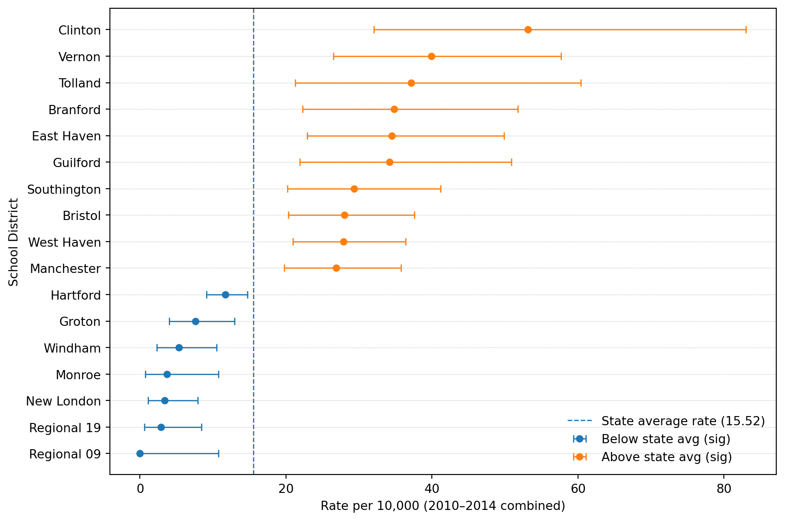
# Save as PDF
agerange = "15-19"
out_pdf = f"results/barplot_est_beforeadjustment_twosided_2010_2014_{agerange}.pdf"
fig.savefig(out_pdf)
print("Saved:", out_pdf)Saved: results/barplot_est_beforeadjustment_twosided_2010_2014_15-19.pdf# Merge
school_district_rate_results = mydata.merge(results, on="school_district", how="inner")
print("school_district_rate_results shape:", school_district_rate_results.shape)
# Short name
school_district_rate_results["school_district_short"] = (
school_district_rate_results["school_district"]
.astype(str)
.str.replace(" School District", "", regex=False)
)
# Drop NA rate
before = school_district_rate_results.shape[0]
school_district_rate_results = school_district_rate_results.dropna(subset=["rate"]).reset_index(drop=True)
after = school_district_rate_results.shape[0]
print(f"Dropped NA rate rows: {before} -> {after}")
# Classification:
# 3 = significant & above avg; 2 = not significant; 1 = significant & below avg
ind = np.zeros(after, dtype=int)
sig = school_district_rate_results["significance_diff_state_avg"].astype(bool).to_numpy()
ratio = school_district_rate_results["ratio"].astype(float).to_numpy()
ind[(sig) & (ratio > 1)] = 3
ind[(~sig)] = 2
ind[(sig) & (ratio < 1)] = 1
school_district_rate_results["ind_beforeadj"] = ind
# subsets for labeling (two-sided significant)
data1 = school_district_rate_results[(sig) & (ratio > 1)].copy() # above
data2 = school_district_rate_results[(sig) & (ratio < 1)].copy() # below
print("Significant above:", data1.shape[0], "Significant below:", data2.shape[0])school_district_rate_results shape: (119, 56)
Dropped NA rate rows: 119 -> 119
Significant above: 10 Significant below: 7We’ll download Unified (UNSD) and Secondary (SCSD) for Connecticut and combine them. CT school districts can appear under one type or the other depending on how they’re defined, so combining makes matching easier.
import os
import zipfile
from pathlib import Path
import requests
# TIGER/Line 2024 CT school district shapefiles (CT FIPS = 09)
# Index page shows tl_2024_09_unsd.zip exists here:
# https://www2.census.gov/geo/tiger/TIGER2024/UNSD/ (and SCSD similarly)
base = "https://www2.census.gov/geo/tiger/TIGER2024"
urls = {
"UNSD": f"{base}/UNSD/tl_2024_09_unsd.zip",
"SCSD": f"{base}/SCSD/tl_2024_09_scsd.zip",
}
data_dir = Path("data/geoshapes")
data_dir.mkdir(parents=True, exist_ok=True)
def download_and_unzip(url, out_dir):
zip_path = out_dir / Path(url).name
if not zip_path.exists():
print("Downloading:", url)
r = requests.get(url, timeout=60)
r.raise_for_status()
zip_path.write_bytes(r.content)
else:
print("Already downloaded:", zip_path)
# unzip into its own folder
folder = out_dir / zip_path.stem
folder.mkdir(exist_ok=True)
with zipfile.ZipFile(zip_path, "r") as z:
z.extractall(folder)
return folder
unsd_dir = download_and_unzip(urls["UNSD"], data_dir)
scsd_dir = download_and_unzip(urls["SCSD"], data_dir)
print("UNSD extracted to:", unsd_dir)
print("SCSD extracted to:", scsd_dir)Already downloaded: data/geoshapes/tl_2024_09_unsd.zip
Already downloaded: data/geoshapes/tl_2024_09_scsd.zip
UNSD extracted to: data/geoshapes/tl_2024_09_unsd
SCSD extracted to: data/geoshapes/tl_2024_09_scsdThis uses the Census Bureau’s TIGER/Line distribution and the School District Review Program updates pipeline.
import geopandas as gpd
# Read the shapefiles
g_unsd = gpd.read_file(unsd_dir)
g_scsd = gpd.read_file(scsd_dir)
print("UNSD:", g_unsd.shape, "columns:", list(g_unsd.columns)[:12])
print("SCSD:", g_scsd.shape, "columns:", list(g_scsd.columns)[:12])
# Both typically have a NAME field
name_col = "NAME"
if name_col not in g_unsd.columns or name_col not in g_scsd.columns:
raise KeyError("Expected a NAME column in TIGER school district shapefiles.")
g_unsd["school_district"] = g_unsd[name_col].astype(str)
g_scsd["school_district"] = g_scsd[name_col].astype(str)
# Combine into one GeoDataFrame (drop duplicates by name+geometry id-ish if desired)
g_ct = pd.concat([g_unsd, g_scsd], ignore_index=True)
g_ct = gpd.GeoDataFrame(g_ct, geometry="geometry", crs=g_unsd.crs)
print("Combined g_ct:", g_ct.shape)
print("Example district names:", g_ct["school_district"].head(5).tolist())UNSD: (115, 16) columns: ['STATEFP', 'UNSDLEA', 'GEOID', 'GEOIDFQ', 'NAME', 'LSAD', 'LOGRADE', 'HIGRADE', 'MTFCC', 'SDTYP', 'FUNCSTAT', 'ALAND']
SCSD: (8, 16) columns: ['STATEFP', 'SCSDLEA', 'GEOID', 'GEOIDFQ', 'NAME', 'LSAD', 'LOGRADE', 'HIGRADE', 'MTFCC', 'SDTYP', 'FUNCSTAT', 'ALAND']
Combined g_ct: (123, 18)
Example district names: ['Ansonia School District', 'Avon School District', 'Berlin School District', 'Bethel School District', 'Bloomfield School District']import re
from district_zip_convert import district_zip_convert
def normalize_regional_high(name: str) -> str:
"""Convert TIGER-style 'Regional High School District NN' -> 'Regional School District NN'."""
s = str(name).strip()
s = re.sub(r"^Regional High School District\s+", "Regional School District ", s)
return s
# 1) Normalize TIGER regional names first (geometry side)
g_ct["school_district"] = g_ct["school_district"].map(normalize_regional_high)
# 2) Then apply full converter on both sides
g_ct["school_district"] = (
district_zip_convert(g_ct["school_district"])["school_district"].astype(str).str.strip()
)
school_district_rate_results["school_district"] = (
district_zip_convert(school_district_rate_results["school_district"])["school_district"].astype(str).str.strip()
)
# 3) Drop TIGER "not defined" (not a real district for our purposes)
g_ct = g_ct[g_ct["school_district"] != "School District Not Defined"].copy()
# 4) Re-check mismatches
have_geom = set(g_ct["school_district"].dropna().unique())
have_data = set(school_district_rate_results["school_district"].dropna().unique())
missing_in_geom = sorted([d for d in have_data if d not in have_geom])
missing_in_data = sorted([d for d in have_geom if d not in have_data])
print("After fixing regional names:")
print(" Districts in results but not in geometry:", missing_in_geom)
print(" Districts in geometry but not in results (first 50):", missing_in_data[:50])After fixing regional names:
Districts in results but not in geometry: ['Woodstock School District']
Districts in geometry but not in results (first 50): ['Oxford School District']# Exclude Woodstock from mapping join (keep it in tables/results)
school_district_rate_results_map = school_district_rate_results[
school_district_rate_results["school_district"] != "Woodstock School District"
].copy()
# Re-check mismatches after fixes
have_geom = set(g_ct["school_district"].dropna().unique())
have_data = set(school_district_rate_results_map["school_district"].dropna().unique())
missing_in_geom = sorted([d for d in have_data if d not in have_geom])
missing_in_data = sorted([d for d in have_geom if d not in have_data])
print("After fixes:")
print(" Districts in results (mapped) but not in geometry:", missing_in_geom)
print(" Districts in geometry but not in results (first 50):", missing_in_data[:50])
print(" Woodstock kept in results but excluded from map join.")After fixes:
Districts in results (mapped) but not in geometry: []
Districts in geometry but not in results (first 50): ['Oxford School District']
Woodstock kept in results but excluded from map join.# Join: geometry + results info (INCLUDING counts + population + rates)
# Pick the columns we want to carry into the map GeoDataFrame
join_cols = [
"school_district",
"ind_beforeadj",
"significance_diff_state_avg",
"ratio",
"rate",
"lower",
"upper",
"count_15_19", # <-- counts (5-year total)
"pop_15_19_times_nyear", # <-- 5-year population
"school_district_short",
]
missing = [c for c in join_cols if c not in school_district_rate_results.columns]
if missing:
raise KeyError(f"school_district_rate_results is missing columns needed for mapping: {missing}")
# Left-join so every polygon stays, even if no data (e.g., Oxford)
g_plot = g_ct.merge(
school_district_rate_results[join_cols],
on="school_district",
how="left"
)
# Fill region type: 1=below(sig), 2=neither, 3=above(sig), 4=not included/unmatched
g_plot["fill_region"] = g_plot["ind_beforeadj"].fillna(4).astype(int)
# Add a convenient scaled rate for plotting
g_plot["rate_per_10k"] = g_plot["rate"] * 10_000
print("g_plot shape:", g_plot.shape)
print("Fill_region value counts:\n", g_plot["fill_region"].value_counts(dropna=False).sort_index())
# Project for nicer geometry computations/plotting
g_plot = g_plot.to_crs(epsg=3857)
# Label points inside polygons (robust alternative to centroid)
g_plot["label_pt"] = g_plot.geometry.representative_point()
g_plot["x"] = g_plot["label_pt"].x
g_plot["y"] = g_plot["label_pt"].y
# Significant polygons for labels (above/below)
sig_pts = g_plot[g_plot["fill_region"].isin([1, 3])].copy()
print("Significant polygons available for labels:", sig_pts.shape[0])
# Quick peek (including count + rate fields)
display(g_plot[[
"school_district", "count_15_19", "pop_15_19_times_nyear", "rate", "rate_per_10k",
"fill_region"
]].head())g_plot shape: (122, 29)
Fill_region value counts:
fill_region
1 7
2 104
3 10
4 1
Name: count, dtype: int64
Significant polygons available for labels: 17| school_district | count_15_19 | pop_15_19_times_nyear | rate | rate_per_10k | fill_region | |
|---|---|---|---|---|---|---|
| 0 | Ansonia School District | 5.0 | 6447 | 0.000776 | 7.755545 | 2 |
| 1 | Avon School District | 5.0 | 6418 | 0.000779 | 7.790589 | 2 |
| 2 | Berlin School District | 6.0 | 5102 | 0.001176 | 11.760094 | 2 |
| 3 | Bethel School District | 6.0 | 6108 | 0.000982 | 9.823183 | 2 |
| 4 | Bloomfield School District | 10.0 | 5475 | 0.001826 | 18.264840 | 2 |
import matplotlib.pyplot as plt
import numpy as np
# Ensure count column exists
if "count_15_19" not in g_plot.columns:
raise KeyError("g_plot is missing 'count_15_19'. Make sure you merged results columns into g_plot.")
fig, ax = plt.subplots(figsize=(10, 6))
# Plot counts as choropleth (automatic colormap)
g_plot.plot(
column="count_15_19",
ax=ax,
legend=True,
edgecolor="white",
linewidth=0.4,
missing_kwds={"color": "lightgrey", "label": "No data"}
)
ax.set_axis_off()
ax.set_title("Connecticut school districts: total count (2010–2014)", pad=12)
plt.tight_layout()
plt.show()
plt.savefig(f"results/CT_counts_heatmap_2010_2014_{agerange}.pdf")
plt.close(fig)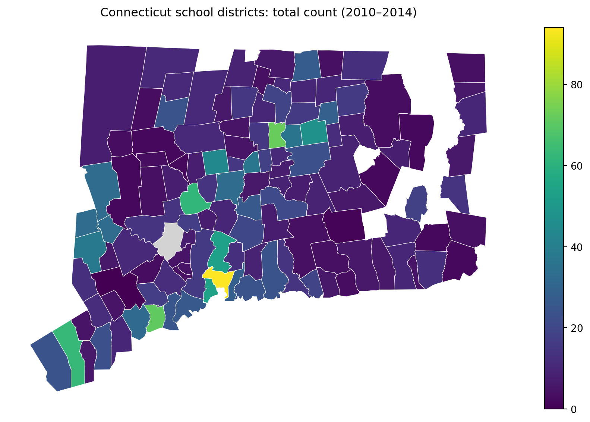
<Figure size 672x480 with 0 Axes>if "pop_15_19_times_nyear" in g_plot.columns:
fig, ax = plt.subplots(figsize=(10, 6))
g_plot.plot(
column="pop_15_19_times_nyear",
ax=ax,
legend=True,
edgecolor="white",
linewidth=0.4,
missing_kwds={"color": "lightgrey", "label": "No data"}
)
ax.set_axis_off()
ax.set_title("Connecticut school districts: population at risk (15–19) × 5 years", pad=12)
plt.tight_layout()
plt.show()
plt.savefig(f"results/CT_pop_heatmap_2010_2014_{agerange}.pdf")
plt.close(fig)
else:
print("Skipping population map: g_plot lacks 'pop_15_19_times_nyear'.")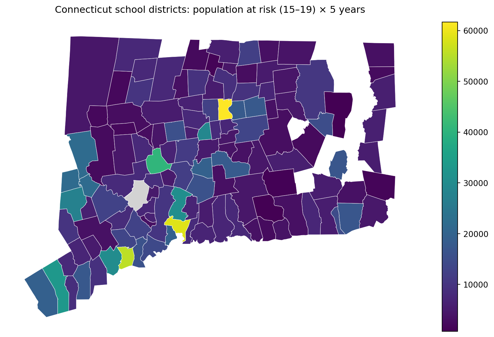
<Figure size 672x480 with 0 Axes>fig, ax = plt.subplots(figsize=(10, 6))
# Create a more readable rate scale
g_plot["rate_per_10k"] = g_plot["rate"] * 10_000
g_plot.plot(
column="rate_per_10k",
ax=ax,
legend=True,
edgecolor="white",
linewidth=0.4,
missing_kwds={"color": "lightgrey", "label": "No data"}
)
ax.set_axis_off()
ax.set_title("Connecticut school districts: rate per 10,000 (2010–2014)", pad=12)
plt.tight_layout()
plt.show()
plt.savefig(f"results/CT_rates_heatmap_2010_2014_{agerange}.pdf")
plt.close(fig)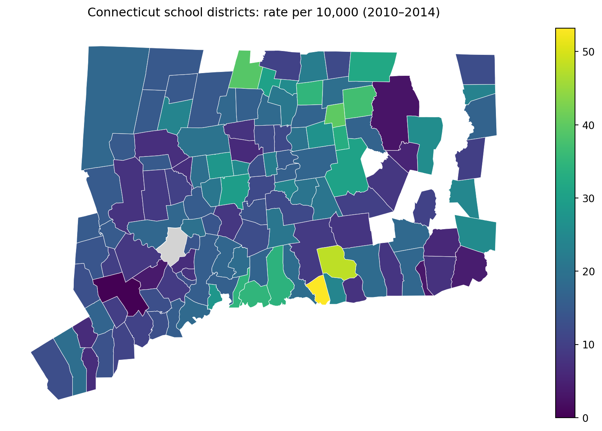
<Figure size 672x480 with 0 Axes>import matplotlib.pyplot as plt
agerange = "15-19"
os.makedirs("results", exist_ok=True)
# Color mapping
fill_colors = {
1: "green", # below average
2: "blue", # neither
3: "red", # above average
4: "darkgrey", # not included / unmatched
}
g_plot["color"] = g_plot["fill_region"].map(fill_colors)
fig, ax = plt.subplots(figsize=(10, 6))
# Polygons
g_plot.plot(
ax=ax,
color=g_plot["color"],
edgecolor="white",
linewidth=0.7
)
ax.set_axis_off()
ax.set_title("Connecticut school districts: significant above/below state average", pad=12)
# Overlay labels for significant districts only
# District name + rate per 10,000
for _, row in sig_pts.iterrows():
if pd.isna(row["rate"]):
continue
ax.plot(row["x"], row["y"], marker="o", markersize=3, color="black")
ax.text(row["x"], row["y"] + 3000, str(row["school_district_short"]), fontsize=9, color="black")
ax.text(row["x"], row["y"] - 3000, f"{row['rate']*10000:.2f}", fontsize=9, color="black")
# Legend
import matplotlib.patches as mpatches
legend_handles = [
mpatches.Patch(color=fill_colors[1], label="Below average (sig)"),
mpatches.Patch(color=fill_colors[2], label="Neither below nor above"),
mpatches.Patch(color=fill_colors[3], label="Above average (sig)"),
mpatches.Patch(color=fill_colors[4], label="Not included / unmatched"),
]
ax.legend(handles=legend_handles, loc="lower right", frameon=False)
out_pdf = f"results/CT_sig_rate_2010_2014_{agerange}.pdf"
plt.tight_layout()
plt.savefig(out_pdf)
plt.show()
print("Saved:", out_pdf)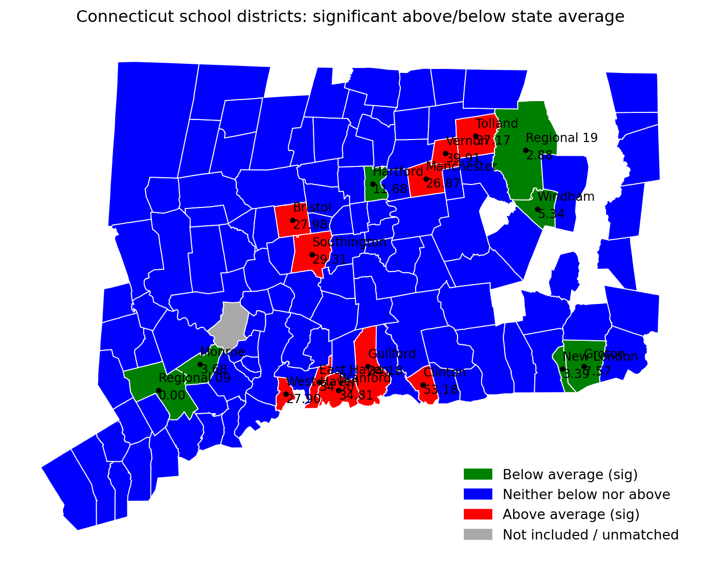
Saved: results/CT_sig_rate_2010_2014_15-19.pdfimport matplotlib.pyplot as plt
import os
import pandas as pd
agerange = "15-19"
os.makedirs("results", exist_ok=True)
# --- Map 4 (alt): color by rate_per_10k, outline only significant districts ---
# Make sure rate_per_10k exists
if "rate_per_10k" not in g_plot.columns:
g_plot["rate_per_10k"] = g_plot["rate"] * 10_000
# Significant polygons: those with fill_region 1 (below sig) or 3 (above sig)
sig_polys = g_plot[g_plot["fill_region"].isin([1, 3])].copy()
fig, ax = plt.subplots(figsize=(10, 6))
# Base layer: choropleth of rates
g_plot.plot(
column="rate_per_10k",
ax=ax,
legend=True,
edgecolor="white",
linewidth=0.4,
missing_kwds={"color": "lightgrey", "label": "No data"}
)
# Overlay: thick outline around significant districts (no fill)
sig_polys.boundary.plot(
ax=ax,
linewidth=2.5, # thick border
color="black"
)
# Optional: keep labels for significant districts (name + rate)
for _, row in sig_polys.iterrows():
if pd.isna(row["rate_per_10k"]):
continue
ax.plot(row["x"], row["y"], marker="o", markersize=3, color="black")
ax.text(row["x"], row["y"] + 3000, str(row["school_district_short"]), fontsize=9, color="black")
ax.text(row["x"], row["y"] - 3000, f"{row['rate_per_10k']:.2f}", fontsize=9, color="black")
ax.set_axis_off()
ax.set_title("CT school districts: rate per 10,000 (fill) with significant districts outlined", pad=12)
out_pdf = f"results/CT_sig_outline_rate_heatmap_2010_2014_{agerange}.pdf"
plt.tight_layout()
plt.savefig(out_pdf)
plt.show()
print("Saved:", out_pdf)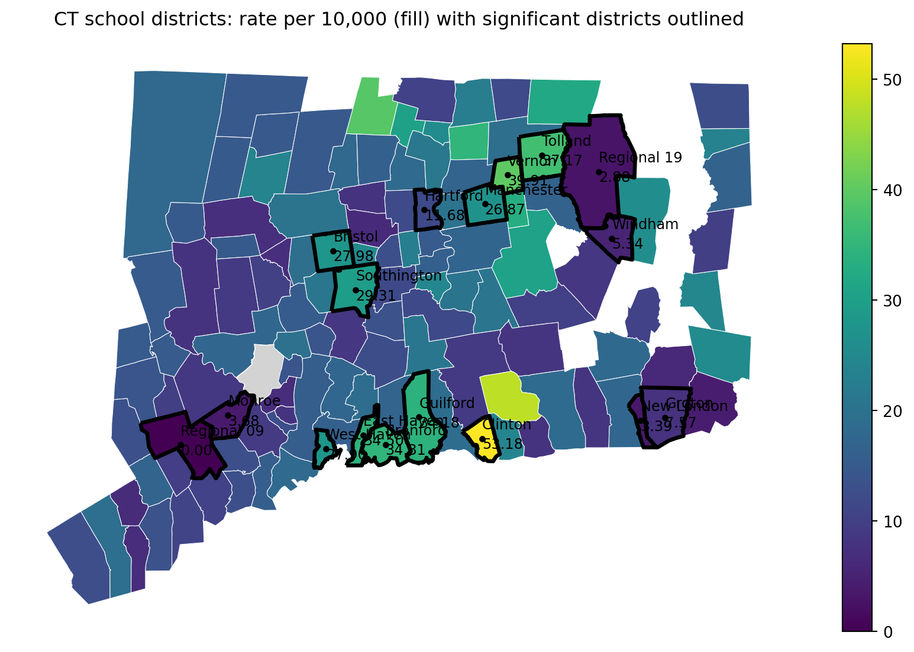
Saved: results/CT_sig_outline_rate_heatmap_2010_2014_15-19.pdfIn Parts 1–2, we treated each school district’s 2010–2014 rate as a signal and asked a simple screening question: which districts look unusually high or low compared to the state average? That’s a useful first step for surveillance, but it immediately raises the next question we discussed with our collaborators:
Why do rates differ across districts?
A high (or low) rate could reflect many things besides “true underlying risk,”” including differences in population size, random fluctuation, access to care, and the mix of community conditions that shape adolescent mental health. If our goal is not just to flag outliers, but to understand patterns and guide prevention planning, we need to move beyond “district A is higher than average” toward “district A is higher than expected given what we know about the district.”
From both prior public-health research and local knowledge from stakeholders, we hypothesize that differences in severe suicidal behavior across districts may be related to community context, especially factors that are plausibly connected to stress, opportunity, support, and school climate.
Two broad domains came up repeatedly in our conversations:
Socioeconomic conditions
Academic environment and performance
Importantly, we are not claiming these factors “cause” suicidal behavior from this study alone. Rather, we want to test a more modest and practical idea:
Do socioeconomic context and academic indicators help explain systematic differences in district rates, beyond what we would expect from random variation?
This explanatory step is useful, but it comes with responsibilities:
To investigate these hypotheses, we worked with collaborators to obtain district-level measures related to:
In the next part of the case study, we will:
Assemble predictors into an analysis-ready district dataset. Combine district-level academic and socioeconomic measures into a single table aligned with the outcomes we computed earlier.
Explore correlations and redundancy. Many community indicators move together (e.g., poverty and unemployment). We’ll examine correlation structure to avoid feeding highly redundant variables into a model without thinking.
Build a model to estimate the effects of district-level factors. We will fit a model that relates the outcome rate to district-level predictors and interpret estimated associations (direction, magnitude, uncertainty), while being transparent about the limits of observational data.
import pandas as pd
# Path (project-relative)
path_cov = "data/school_district_data_unstandardized_covariates_2010_2014.csv"
def clean_district_name(s: pd.Series) -> pd.Series:
return (
s.astype(str)
.str.strip()
.str.replace(r"\s+", " ", regex=True)
)
# Load covariates
cov = pd.read_csv(path_cov)
cov["school_district"] = clean_district_name(cov["school_district"])
# Make sure district list matches OUR analysis list (from sch_data / yearlycount)
# Use sch_data as the source of truth (same list/order used earlier in the case study)
districts = clean_district_name(sch_data["school_district"])
# Keep only districts in our list (and in the same order)
cov_matched = (
pd.DataFrame({"school_district": districts})
.merge(cov, on="school_district", how="left", validate="one_to_one")
)
# Quick checks
print("Districts in our analysis list:", len(districts))
print("Rows in cov_matched:", cov_matched.shape[0])
print("Covariate columns:", cov_matched.shape[1] - 1)
missing_any = cov_matched.drop(columns=["school_district"]).isna().all(axis=1).sum()
print("Districts with all covariates missing after merge:", int(missing_any))
cov_matched.head()Districts in our analysis list: 119
Rows in cov_matched: 119
Covariate columns: 16
Districts with all covariates missing after merge: 0| school_district | male_householder_rate | household_size | pop_under18_rate | pop_white_rate | poverty_rate_grade9_12 | enrollment_grade9_12 | avg_CAPT | graduation_rate | median_income | dropout_rate | serious_incidence_prop | incidence_rate | freelunch_rate | attendance_rate | grant | serious_incidence_rate | |
|---|---|---|---|---|---|---|---|---|---|---|---|---|---|---|---|---|---|
| 0 | Ansonia School District | 0.526854 | 2.50 | 0.236811 | 0.803528 | 0.158730 | 1323 | 228.921010 | 0.902492 | 56541.0 | 0.0245 | 0.018684 | 0.134039 | 0.576952 | 0.940333 | 0 | 0.017690 |
| 1 | Avon School District | 0.600697 | 2.57 | 0.268469 | 0.886412 | 0.088729 | 1251 | 284.714930 | 0.993920 | 105116.0 | 0.0025 | 0.009104 | 0.017137 | 0.042286 | 0.964667 | 0 | 0.008655 |
| 2 | Berlin School District | 0.590951 | 2.62 | 0.227605 | 0.929049 | 0.094435 | 1186 | 266.920952 | 0.940516 | 86211.0 | 0.0155 | 0.023847 | 0.112369 | 0.073633 | 0.962667 | 0 | 0.023225 |
| 3 | Bethel School District | 0.630085 | 2.68 | 0.236056 | 0.899712 | 0.064176 | 1044 | 271.106559 | 0.997161 | 83483.0 | 0.0020 | 0.022074 | 0.088827 | 0.127582 | 0.956333 | 1 | 0.020406 |
| 4 | Bloomfield School District | 0.518382 | 2.29 | 0.170798 | 0.356054 | 0.145251 | 1074 | 222.934220 | 0.916214 | 68372.0 | 0.0295 | 0.050884 | 0.113349 | 0.459150 | 0.956000 | 0 | 0.048834 |
import numpy as np
import pandas as pd
import matplotlib.pyplot as plt
from sklearn.impute import SimpleImputer
from sklearn.preprocessing import StandardScaler
from sklearn.decomposition import PCA
from sklearn.cluster import KMeans
from sklearn.metrics import silhouette_score
# --- Input: cov_matched (from previous step) ---
print("cov_matched shape:", cov_matched.shape)
display(cov_matched.head())
# Select numeric covariates
feature_cols = [c for c in cov_matched.columns if c != "school_district"]
X = cov_matched[feature_cols].apply(pd.to_numeric, errors="coerce")
print("Number of features:", len(feature_cols))
print("Total missing values:", int(X.isna().sum().sum()))cov_matched shape: (119, 17)| school_district | male_householder_rate | household_size | pop_under18_rate | pop_white_rate | poverty_rate_grade9_12 | enrollment_grade9_12 | avg_CAPT | graduation_rate | median_income | dropout_rate | serious_incidence_prop | incidence_rate | freelunch_rate | attendance_rate | grant | serious_incidence_rate | |
|---|---|---|---|---|---|---|---|---|---|---|---|---|---|---|---|---|---|
| 0 | Ansonia School District | 0.526854 | 2.50 | 0.236811 | 0.803528 | 0.158730 | 1323 | 228.921010 | 0.902492 | 56541.0 | 0.0245 | 0.018684 | 0.134039 | 0.576952 | 0.940333 | 0 | 0.017690 |
| 1 | Avon School District | 0.600697 | 2.57 | 0.268469 | 0.886412 | 0.088729 | 1251 | 284.714930 | 0.993920 | 105116.0 | 0.0025 | 0.009104 | 0.017137 | 0.042286 | 0.964667 | 0 | 0.008655 |
| 2 | Berlin School District | 0.590951 | 2.62 | 0.227605 | 0.929049 | 0.094435 | 1186 | 266.920952 | 0.940516 | 86211.0 | 0.0155 | 0.023847 | 0.112369 | 0.073633 | 0.962667 | 0 | 0.023225 |
| 3 | Bethel School District | 0.630085 | 2.68 | 0.236056 | 0.899712 | 0.064176 | 1044 | 271.106559 | 0.997161 | 83483.0 | 0.0020 | 0.022074 | 0.088827 | 0.127582 | 0.956333 | 1 | 0.020406 |
| 4 | Bloomfield School District | 0.518382 | 2.29 | 0.170798 | 0.356054 | 0.145251 | 1074 | 222.934220 | 0.916214 | 68372.0 | 0.0295 | 0.050884 | 0.113349 | 0.459150 | 0.956000 | 0 | 0.048834 |
Number of features: 16
Total missing values: 0# --- Impute + standardize ---
imputer = SimpleImputer(strategy="median")
scaler = StandardScaler()
X_imp = imputer.fit_transform(X)
X_std = scaler.fit_transform(X_imp)
print("X_std shape:", X_std.shape)
print("Any NaN after impute/scale?", np.isnan(X_std).any())X_std shape: (119, 16)
Any NaN after impute/scale? False# --- PCA (2D for visualization) ---
pca = PCA(n_components=2, random_state=0)
PC = pca.fit_transform(X_std)
expl = pca.explained_variance_ratio_
print(f"Explained variance: PC1={expl[0]:.3f}, PC2={expl[1]:.3f}, total={expl.sum():.3f}")
pc_df = pd.DataFrame({
"school_district": cov_matched["school_district"].astype(str),
"PC1": PC[:, 0],
"PC2": PC[:, 1],
})
display(pc_df.head())Explained variance: PC1=0.565, PC2=0.136, total=0.701| school_district | PC1 | PC2 | |
|---|---|---|---|
| 0 | Ansonia School District | 2.254028 | -0.400363 |
| 1 | Avon School District | -2.544499 | 0.570444 |
| 2 | Berlin School District | -0.909244 | -0.110284 |
| 3 | Bethel School District | -1.604884 | 0.329483 |
| 4 | Bloomfield School District | 3.630223 | -1.710817 |
# --- Choose k for k-means using silhouette on PC scores ---
# We'll cluster using the first 2 PCs (what students see). You can switch to more PCs later.
k_range = range(2, 9)
sil = []
for k in k_range:
km = KMeans(n_clusters=k, n_init=10, random_state=0)
labels = km.fit_predict(PC)
sil.append(silhouette_score(PC, labels))
best_k = int(k_range[int(np.argmax(sil))])
print("Silhouette scores:", dict(zip(k_range, [round(s, 3) for s in sil])))
print("Chosen k (max silhouette):", best_k)
# Plot silhouette scores
plt.figure(figsize=(7, 4))
plt.plot(list(k_range), sil, marker="o")
plt.xticks(list(k_range))
plt.xlabel("k (number of clusters)")
plt.ylabel("Silhouette score")
plt.title("Choosing k via silhouette score (on PC1–PC2)")
plt.tight_layout()
plt.show()Silhouette scores: {2: 0.691, 3: 0.422, 4: 0.465, 5: 0.457, 6: 0.394, 7: 0.401, 8: 0.401}
Chosen k (max silhouette): 2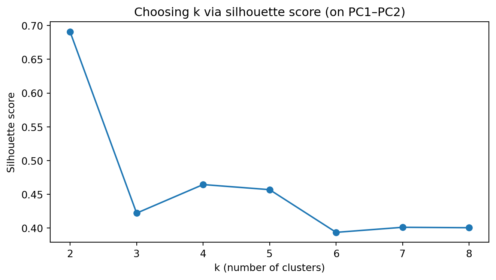
# --- Fit k-means with chosen k and plot PC1 vs PC2 colored by cluster ---
kmeans = KMeans(n_clusters=best_k, n_init=25, random_state=0)
pc_df["cluster"] = kmeans.fit_predict(PC)
# Scatter plot (no manual colors; matplotlib defaults)
fig, ax = plt.subplots(figsize=(8, 6))
scatter = ax.scatter(pc_df["PC1"], pc_df["PC2"], c=pc_df["cluster"], s=35)
ax.set_xlabel(f"PC1 ({expl[0]*100:.1f}% var)")
ax.set_ylabel(f"PC2 ({expl[1]*100:.1f}% var)")
ax.set_title(f"PCA of school districts + k-means clusters (k={best_k})")
# Label a few “most extreme” districts (farthest from origin in PC space)
center = pc_df[["PC1", "PC2"]].mean()
pc_df["dist_center"] = np.sqrt((pc_df["PC1"] - center["PC1"])**2 + (pc_df["PC2"] - center["PC2"])**2)
to_label = pc_df.nlargest(15, "dist_center") # label 8 most extreme points
for _, r in to_label.iterrows():
ax.text(r["PC1"], r["PC2"], r["school_district"], fontsize=8)
plt.tight_layout()
plt.show()
##display(pc_df.sort_values(["cluster", "dist"], ascending=[True, False]).head(5))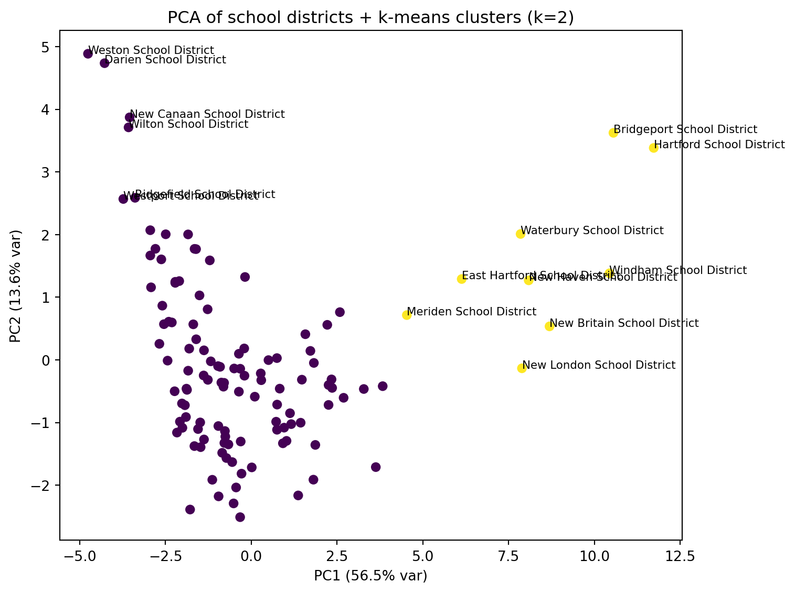
##import numpy as np
import pandas as pd
import matplotlib.pyplot as plt
from sklearn.manifold import TSNE
from sklearn.cluster import KMeans
from sklearn.metrics import silhouette_score
# Use the same district labels
district_names = cov_matched["school_district"].astype(str).reset_index(drop=True)
# t-SNE (2D)
tsne = TSNE(
n_components=2,
perplexity=30, # common default; adjust if n is small/large
learning_rate="auto",
init="pca",
random_state=0
)
Z_tsne = tsne.fit_transform(X_std)
tsne_df = pd.DataFrame({
"school_district": district_names,
"Z1": Z_tsne[:, 0],
"Z2": Z_tsne[:, 1],
})
print("t-SNE embedding shape:", Z_tsne.shape)
display(tsne_df.head())t-SNE embedding shape: (119, 2)| school_district | Z1 | Z2 | |
|---|---|---|---|
| 0 | Ansonia School District | 5.708340 | 3.680246 |
| 1 | Avon School District | 0.024575 | -5.296662 |
| 2 | Berlin School District | 3.552342 | -2.793097 |
| 3 | Bethel School District | -2.953779 | -2.597292 |
| 4 | Bloomfield School District | 7.341845 | 4.114298 |
# Choose k using silhouette on the 2D embedding
k_range = range(2, 9)
sil = []
for k in k_range:
km = KMeans(n_clusters=k, n_init=25, random_state=0)
labels = km.fit_predict(Z_tsne)
sil.append(silhouette_score(Z_tsne, labels))
best_k_tsne = int(k_range[int(np.argmax(sil))])
print("Silhouette scores (t-SNE):", dict(zip(k_range, [round(s, 3) for s in sil])))
print("Chosen k (t-SNE):", best_k_tsne)
# Plot silhouette scores
plt.figure(figsize=(7, 4))
plt.plot(list(k_range), sil, marker="o")
plt.xticks(list(k_range))
plt.xlabel("k")
plt.ylabel("Silhouette score")
plt.title("Choosing k via silhouette (t-SNE embedding)")
plt.tight_layout()
plt.show()Silhouette scores (t-SNE): {2: 0.431, 3: 0.397, 4: 0.451, 5: 0.484, 6: 0.46, 7: 0.466, 8: 0.451}
Chosen k (t-SNE): 5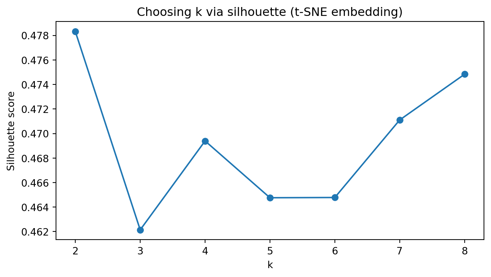
# Fit k-means with chosen k and plot t-SNE colored by cluster
kmeans_tsne = KMeans(n_clusters=best_k_tsne, n_init=25, random_state=0)
tsne_df["cluster"] = kmeans_tsne.fit_predict(Z_tsne)
fig, ax = plt.subplots(figsize=(8, 6))
ax.scatter(tsne_df["Z1"], tsne_df["Z2"], c=tsne_df["cluster"], s=35)
ax.set_xlabel("t-SNE 1")
ax.set_ylabel("t-SNE 2")
ax.set_title(f"t-SNE of school districts + k-means clusters (k={best_k_tsne})")
# Label a few “extreme” points (optional)
center = tsne_df[["Z1", "Z2"]].mean()
tsne_df["dist_center"] = np.sqrt((tsne_df["Z1"] - center["Z1"])**2 + (tsne_df["Z2"] - center["Z2"])**2)
to_label = tsne_df.nlargest(15, "dist_center")
for _, r in to_label.iterrows():
ax.text(r["Z1"], r["Z2"], r["school_district"], fontsize=8)
plt.tight_layout()
plt.show()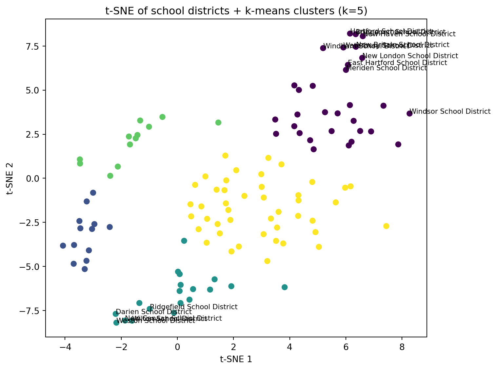
##import numpy as np
import pandas as pd
import matplotlib.pyplot as plt
from sklearn.cluster import KMeans
from sklearn.metrics import silhouette_score
district_names = cov_matched["school_district"].astype(str).reset_index(drop=True)
# Try to import UMAP; if not available, print a helpful message
try:
import umap
reducer = umap.UMAP(
n_components=2,
n_neighbors=15,
min_dist=0.1,
random_state=0
)
Z_umap = reducer.fit_transform(X_std)
umap_df = pd.DataFrame({
"school_district": district_names,
"U1": Z_umap[:, 0],
"U2": Z_umap[:, 1],
})
print("UMAP embedding shape:", Z_umap.shape)
display(umap_df.head())
except Exception as e:
print("UMAP is not available in this environment.")
print("Install it with: pip install umap-learn")
print("Error was:", repr(e))
Z_umap = None
A module that was compiled using NumPy 1.x cannot be run in
NumPy 2.3.5 as it may crash. To support both 1.x and 2.x
versions of NumPy, modules must be compiled with NumPy 2.0.
Some module may need to rebuild instead e.g. with 'pybind11>=2.12'.
If you are a user of the module, the easiest solution will be to
downgrade to 'numpy<2' or try to upgrade the affected module.
We expect that some modules will need time to support NumPy 2.
Traceback (most recent call last): File "<frozen runpy>", line 198, in _run_module_as_main
File "<frozen runpy>", line 88, in _run_code
File "/Users/kun.chen/Dropbox/Teaching/Spring-2026/STAT3255/ids-s26/.ids-s26/lib/python3.11/site-packages/ipykernel_launcher.py", line 18, in <module>
app.launch_new_instance()
File "/Users/kun.chen/Dropbox/Teaching/Spring-2026/STAT3255/ids-s26/.ids-s26/lib/python3.11/site-packages/traitlets/config/application.py", line 1075, in launch_instance
app.start()
File "/Users/kun.chen/Dropbox/Teaching/Spring-2026/STAT3255/ids-s26/.ids-s26/lib/python3.11/site-packages/ipykernel/kernelapp.py", line 758, in start
self.io_loop.start()
File "/Users/kun.chen/Dropbox/Teaching/Spring-2026/STAT3255/ids-s26/.ids-s26/lib/python3.11/site-packages/tornado/platform/asyncio.py", line 211, in start
self.asyncio_loop.run_forever()
File "/opt/homebrew/Cellar/python@3.11/3.11.14_1/Frameworks/Python.framework/Versions/3.11/lib/python3.11/asyncio/base_events.py", line 608, in run_forever
self._run_once()
File "/opt/homebrew/Cellar/python@3.11/3.11.14_1/Frameworks/Python.framework/Versions/3.11/lib/python3.11/asyncio/base_events.py", line 1936, in _run_once
handle._run()
File "/opt/homebrew/Cellar/python@3.11/3.11.14_1/Frameworks/Python.framework/Versions/3.11/lib/python3.11/asyncio/events.py", line 84, in _run
self._context.run(self._callback, *self._args)
File "/Users/kun.chen/Dropbox/Teaching/Spring-2026/STAT3255/ids-s26/.ids-s26/lib/python3.11/site-packages/ipykernel/kernelbase.py", line 614, in shell_main
await self.dispatch_shell(msg, subshell_id=subshell_id)
File "/Users/kun.chen/Dropbox/Teaching/Spring-2026/STAT3255/ids-s26/.ids-s26/lib/python3.11/site-packages/ipykernel/kernelbase.py", line 471, in dispatch_shell
await result
File "/Users/kun.chen/Dropbox/Teaching/Spring-2026/STAT3255/ids-s26/.ids-s26/lib/python3.11/site-packages/ipykernel/ipkernel.py", line 366, in execute_request
await super().execute_request(stream, ident, parent)
File "/Users/kun.chen/Dropbox/Teaching/Spring-2026/STAT3255/ids-s26/.ids-s26/lib/python3.11/site-packages/ipykernel/kernelbase.py", line 827, in execute_request
reply_content = await reply_content
File "/Users/kun.chen/Dropbox/Teaching/Spring-2026/STAT3255/ids-s26/.ids-s26/lib/python3.11/site-packages/ipykernel/ipkernel.py", line 458, in do_execute
res = shell.run_cell(
File "/Users/kun.chen/Dropbox/Teaching/Spring-2026/STAT3255/ids-s26/.ids-s26/lib/python3.11/site-packages/ipykernel/zmqshell.py", line 663, in run_cell
return super().run_cell(*args, **kwargs)
File "/Users/kun.chen/Dropbox/Teaching/Spring-2026/STAT3255/ids-s26/.ids-s26/lib/python3.11/site-packages/IPython/core/interactiveshell.py", line 3123, in run_cell
result = self._run_cell(
File "/Users/kun.chen/Dropbox/Teaching/Spring-2026/STAT3255/ids-s26/.ids-s26/lib/python3.11/site-packages/IPython/core/interactiveshell.py", line 3178, in _run_cell
result = runner(coro)
File "/Users/kun.chen/Dropbox/Teaching/Spring-2026/STAT3255/ids-s26/.ids-s26/lib/python3.11/site-packages/IPython/core/async_helpers.py", line 128, in _pseudo_sync_runner
coro.send(None)
File "/Users/kun.chen/Dropbox/Teaching/Spring-2026/STAT3255/ids-s26/.ids-s26/lib/python3.11/site-packages/IPython/core/interactiveshell.py", line 3400, in run_cell_async
has_raised = await self.run_ast_nodes(code_ast.body, cell_name,
File "/Users/kun.chen/Dropbox/Teaching/Spring-2026/STAT3255/ids-s26/.ids-s26/lib/python3.11/site-packages/IPython/core/interactiveshell.py", line 3641, in run_ast_nodes
if await self.run_code(code, result, async_=asy):
File "/Users/kun.chen/Dropbox/Teaching/Spring-2026/STAT3255/ids-s26/.ids-s26/lib/python3.11/site-packages/IPython/core/interactiveshell.py", line 3701, in run_code
exec(code_obj, self.user_global_ns, self.user_ns)
File "/var/folders/w9/lfdf18vd055ds72yz1x94d400000gp/T/ipykernel_25912/620713501.py", line 12, in <module>
import umap
File "/Users/kun.chen/Dropbox/Teaching/Spring-2026/STAT3255/ids-s26/.ids-s26/lib/python3.11/site-packages/umap/__init__.py", line 7, in <module>
from .parametric_umap import ParametricUMAP, load_ParametricUMAP
File "/Users/kun.chen/Dropbox/Teaching/Spring-2026/STAT3255/ids-s26/.ids-s26/lib/python3.11/site-packages/umap/parametric_umap.py", line 36, in <module>
import torch
File "/Users/kun.chen/Dropbox/Teaching/Spring-2026/STAT3255/ids-s26/.ids-s26/lib/python3.11/site-packages/torch/__init__.py", line 1477, in <module>
from .functional import * # noqa: F403
File "/Users/kun.chen/Dropbox/Teaching/Spring-2026/STAT3255/ids-s26/.ids-s26/lib/python3.11/site-packages/torch/functional.py", line 9, in <module>
import torch.nn.functional as F
File "/Users/kun.chen/Dropbox/Teaching/Spring-2026/STAT3255/ids-s26/.ids-s26/lib/python3.11/site-packages/torch/nn/__init__.py", line 1, in <module>
from .modules import * # noqa: F403
File "/Users/kun.chen/Dropbox/Teaching/Spring-2026/STAT3255/ids-s26/.ids-s26/lib/python3.11/site-packages/torch/nn/modules/__init__.py", line 35, in <module>
from .transformer import TransformerEncoder, TransformerDecoder, \
File "/Users/kun.chen/Dropbox/Teaching/Spring-2026/STAT3255/ids-s26/.ids-s26/lib/python3.11/site-packages/torch/nn/modules/transformer.py", line 20, in <module>
device: torch.device = torch.device(torch._C._get_default_device()), # torch.device('cpu'),
/Users/kun.chen/Dropbox/Teaching/Spring-2026/STAT3255/ids-s26/.ids-s26/lib/python3.11/site-packages/umap/umap_.py:1952: UserWarning:
n_jobs value 1 overridden to 1 by setting random_state. Use no seed for parallelism.
UMAP embedding shape: (119, 2)| school_district | U1 | U2 | |
|---|---|---|---|
| 0 | Ansonia School District | 3.574197 | 13.022011 |
| 1 | Avon School District | 7.949921 | 9.183983 |
| 2 | Berlin School District | 7.664978 | 12.153422 |
| 3 | Bethel School District | 4.986406 | 9.323744 |
| 4 | Bloomfield School District | 3.655679 | 13.467139 |
# Only run clustering/plot if UMAP worked
if Z_umap is not None:
k_range = range(2, 9)
sil = []
for k in k_range:
km = KMeans(n_clusters=k, n_init=25, random_state=0)
labels = km.fit_predict(Z_umap)
sil.append(silhouette_score(Z_umap, labels))
best_k_umap = int(k_range[int(np.argmax(sil))])
print("Silhouette scores (UMAP):", dict(zip(k_range, [round(s, 3) for s in sil])))
print("Chosen k (UMAP):", best_k_umap)
plt.figure(figsize=(7, 4))
plt.plot(list(k_range), sil, marker="o")
plt.xticks(list(k_range))
plt.xlabel("k")
plt.ylabel("Silhouette score")
plt.title("Choosing k via silhouette (UMAP embedding)")
plt.tight_layout()
plt.show()
kmeans_umap = KMeans(n_clusters=best_k_umap, n_init=25, random_state=0)
umap_df["cluster"] = kmeans_umap.fit_predict(Z_umap)
fig, ax = plt.subplots(figsize=(8, 6))
ax.scatter(umap_df["U1"], umap_df["U2"], c=umap_df["cluster"], s=35)
ax.set_xlabel("UMAP 1")
ax.set_ylabel("UMAP 2")
ax.set_title(f"UMAP of school districts + k-means clusters (k={best_k_umap})")
# Optional: label a few “extreme” points
center = umap_df[["U1", "U2"]].mean()
umap_df["dist_center"] = np.sqrt((umap_df["U1"] - center["U1"])**2 + (umap_df["U2"] - center["U2"])**2)
to_label = umap_df.nlargest(15, "dist_center")
for _, r in to_label.iterrows():
ax.text(r["U1"], r["U2"], r["school_district"], fontsize=8)
plt.tight_layout()
plt.show()Silhouette scores (UMAP): {2: 0.472, 3: 0.592, 4: 0.591, 5: 0.535, 6: 0.509, 7: 0.534, 8: 0.542}
Chosen k (UMAP): 3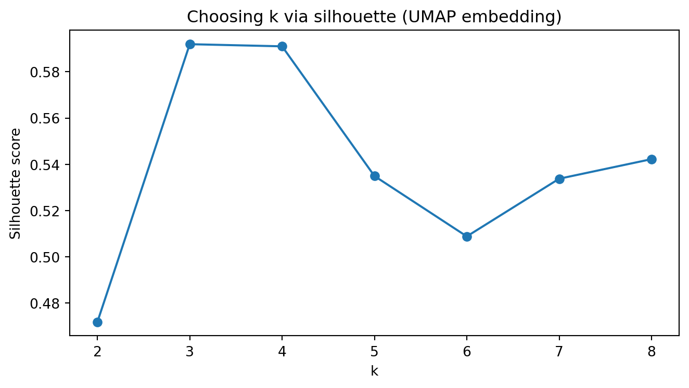
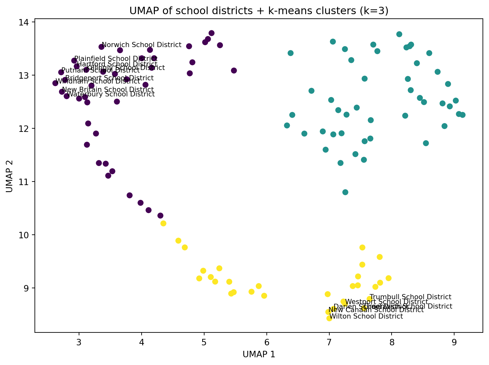
import numpy as np
import pandas as pd
# Start from covariates table
cov = cov_matched.copy()
# Which columns are "rate/proportion" variables?
# We'll transform those that look like proportions: *_rate, *_prop
rate_cols = [c for c in cov.columns if (c.endswith("_rate") or c.endswith("_prop"))]
print("Rate/proportion columns to transform:")
print(rate_cols)
def arcsin_sqrt(p):
"""Arcsin-sqrt transform for proportions in [0,1]."""
p = pd.to_numeric(p, errors="coerce")
# clip for safety in case of small numeric issues
p = p.clip(lower=0, upper=1)
return np.arcsin(np.sqrt(p))
# Apply transform (leave non-rate variables unchanged)
for c in rate_cols:
cov[c] = arcsin_sqrt(cov[c])
display(cov.head())Rate/proportion columns to transform:
['male_householder_rate', 'pop_under18_rate', 'pop_white_rate', 'graduation_rate', 'dropout_rate', 'serious_incidence_prop', 'incidence_rate', 'freelunch_rate', 'attendance_rate', 'serious_incidence_rate']| school_district | male_householder_rate | household_size | pop_under18_rate | pop_white_rate | poverty_rate_grade9_12 | enrollment_grade9_12 | avg_CAPT | graduation_rate | median_income | dropout_rate | serious_incidence_prop | incidence_rate | freelunch_rate | attendance_rate | grant | serious_incidence_rate | |
|---|---|---|---|---|---|---|---|---|---|---|---|---|---|---|---|---|---|
| 0 | Ansonia School District | 0.812265 | 2.50 | 0.508230 | 1.111573 | 0.158730 | 1323 | 228.921010 | 1.253222 | 56541.0 | 0.157171 | 0.137118 | 0.374829 | 0.862657 | 1.324032 | 0 | 0.133400 |
| 1 | Avon School District | 0.886789 | 2.57 | 0.544675 | 1.227038 | 0.088729 | 1251 | 284.714930 | 1.492740 | 105116.0 | 0.050021 | 0.095560 | 0.131284 | 0.207114 | 1.381700 | 0 | 0.093166 |
| 2 | Berlin School District | 0.876858 | 2.62 | 0.497328 | 1.301175 | 0.094435 | 1186 | 266.920952 | 1.324418 | 86211.0 | 0.124823 | 0.155045 | 0.341833 | 0.274800 | 1.376355 | 0 | 0.152993 |
| 3 | Bethel School District | 0.916998 | 2.68 | 0.507342 | 1.248565 | 0.064176 | 1044 | 271.106559 | 1.517488 | 83483.0 | 0.044736 | 0.149127 | 0.302638 | 0.365254 | 1.360279 | 1 | 0.143340 |
| 4 | Bloomfield School District | 0.803784 | 2.29 | 0.426050 | 0.639386 | 0.145251 | 1074 | 222.934220 | 1.277135 | 68372.0 | 0.172612 | 0.227533 | 0.343381 | 0.744502 | 1.359465 | 0 | 0.222825 |
import matplotlib.pyplot as plt
from sklearn.impute import SimpleImputer
# Numeric matrix excluding the district name
feature_cols = [c for c in cov.columns if c != "school_district"]
X = cov[feature_cols].apply(pd.to_numeric, errors="coerce")
# Impute missing values for correlation computation
imputer = SimpleImputer(strategy="median")
X_imp = pd.DataFrame(imputer.fit_transform(X), columns=feature_cols)
# Correlation matrix
corr = X_imp.corr()
print("Correlation matrix shape:", corr.shape)
fig, ax = plt.subplots(figsize=(11, 9))
im = ax.imshow(corr.to_numpy(), aspect="auto") # default colormap
ax.set_title("Correlation among district covariates (after arcsin–sqrt transform for rates)")
ax.set_xticks(range(len(feature_cols)))
ax.set_yticks(range(len(feature_cols)))
ax.set_xticklabels(feature_cols, rotation=90)
ax.set_yticklabels(feature_cols)
fig.colorbar(im, ax=ax, fraction=0.046, pad=0.04)
plt.tight_layout()
plt.show()Correlation matrix shape: (16, 16)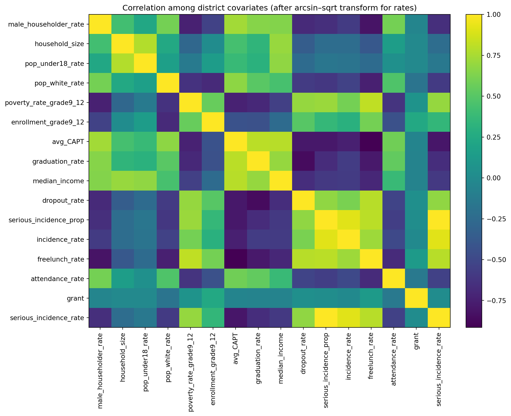
Poisson random-intercept model, using yearly district counts with a log(population) offset, fixed effects for social_factor, acad_factor, and year, and a district random intercept.
In Python, we will use statsmodels.genmod.bayes_mixed_glm.PoissonBayesMixedGLM (a Poisson GLMM fit with variational Bayes).
dat1 in long format (district × year)import numpy as np
import pandas as pd
# --- Inputs assumed from earlier steps ---
# yearlycount: columns school_district + 5 year columns (2010-2014 totals)
# cov_with_factors: has school_district + factor_social + factor_academic (and other covariates)
# sch_data: has school_district + pop_sch_15_19 (annual pop at risk)
years = [2010, 2011, 2012, 2013, 2014]
def clean_district_name(s: pd.Series) -> pd.Series:
return (
s.astype(str)
.str.strip()
.str.replace(r"\s+", " ", regex=True)
)
# Standardize join keys
yearlycount2 = yearlycount.copy()
yearlycount2["school_district"] = clean_district_name(yearlycount2["school_district"])
covf = cov_with_factors.copy()
covf["school_district"] = clean_district_name(covf["school_district"])
pop_df = sch_data[["school_district", "pop_sch_15_19"]].copy()
pop_df["school_district"] = clean_district_name(pop_df["school_district"])
# Long outcome table: y = count in that year
# (Rename year columns if needed: we assume they correspond to 2010..2014)
year_cols = [c for c in yearlycount2.columns if c != "school_district"]
if len(year_cols) != 5:
print("Year columns detected:", year_cols)
dat_y = yearlycount2.melt(
id_vars="school_district",
value_vars=year_cols,
var_name="year_col",
value_name="y"
)
# If columns aren't literal 2010..2014, extract year digits from the column name
dat_y["year"] = dat_y["year_col"].astype(str).str.extract(r"(\d{4})").astype(int)
# Merge factors + population
dat1 = (dat_y
.merge(covf[["school_district", "factor_social", "factor_academic"]], on="school_district", how="left")
.merge(pop_df, on="school_district", how="left")
)
# Keep only 2010–2014 and drop missing essentials
dat1 = dat1[dat1["year"].isin(years)].copy()
dat1 = dat1.dropna(subset=["y", "pop_sch_15_19", "factor_social", "factor_academic"]).reset_index(drop=True)
# Offset = log(population)
dat1["offset"] = np.log(dat1["pop_sch_15_19"].astype(float))
# District id for random intercept
dat1["obs"] = dat1["school_district"].astype("category")
print("dat1 shape:", dat1.shape)
display(dat1.head())
print("y total:", int(dat1["y"].sum()))dat1 shape: (595, 9)| school_district | year_col | y | year | factor_social | factor_academic | pop_sch_15_19 | offset | obs | |
|---|---|---|---|---|---|---|---|---|---|
| 0 | Ansonia School District | ALL2010 | 1 | 2010 | -1.269748 | -1.663473 | 1289.310 | 7.161862 | Ansonia School District |
| 1 | Avon School District | ALL2010 | 1 | 2010 | 1.089770 | 2.615316 | 1283.500 | 7.157346 | Avon School District |
| 2 | Berlin School District | ALL2010 | 2 | 2010 | 0.251322 | 0.409451 | 1020.375 | 6.927925 | Berlin School District |
| 3 | Bethel School District | ALL2010 | 1 | 2010 | 0.894830 | 1.765405 | 1221.685 | 7.107986 | Bethel School District |
| 4 | Bloomfield School District | ALL2010 | 1 | 2010 | -2.451703 | -1.952717 | 1094.930 | 6.998446 | Bloomfield School District |
y total: 1878Model: [ y_{d,t} ({d,t}), ({d,t})=(pop_{d,t})+_0+_1 social+_2 acad+_t]
##import numpy as np
##import pandas as pd
import statsmodels.api as sm
import statsmodels.formula.api as smf
# dat1 should already be district-year long data with:
# y, pop_sch_15_19, factor_social, factor_academic, year
dat_glm = dat1.dropna(subset=["y","pop_sch_15_19","factor_social","factor_academic","year"]).copy()
# Offset = log(pop)
dat_glm["log_pop"] = np.log(dat_glm["pop_sch_15_19"].astype(float))
print("dat_glm shape:", dat_glm.shape)
display(dat_glm.head())
# Poisson GLM with log link and offset
glm_pois = smf.glm(
formula="y ~ factor_social + factor_academic + C(year)",
data=dat_glm,
family=sm.families.Poisson(),
offset=dat_glm["log_pop"]
).fit()
print(glm_pois.summary())dat_glm shape: (595, 10)| school_district | year_col | y | year | factor_social | factor_academic | pop_sch_15_19 | offset | obs | log_pop | |
|---|---|---|---|---|---|---|---|---|---|---|
| 0 | Ansonia School District | ALL2010 | 1 | 2010 | -1.269748 | -1.663473 | 1289.310 | 7.161862 | Ansonia School District | 7.161862 |
| 1 | Avon School District | ALL2010 | 1 | 2010 | 1.089770 | 2.615316 | 1283.500 | 7.157346 | Avon School District | 7.157346 |
| 2 | Berlin School District | ALL2010 | 2 | 2010 | 0.251322 | 0.409451 | 1020.375 | 6.927925 | Berlin School District | 6.927925 |
| 3 | Bethel School District | ALL2010 | 1 | 2010 | 0.894830 | 1.765405 | 1221.685 | 7.107986 | Bethel School District | 7.107986 |
| 4 | Bloomfield School District | ALL2010 | 1 | 2010 | -2.451703 | -1.952717 | 1094.930 | 6.998446 | Bloomfield School District | 6.998446 |
Generalized Linear Model Regression Results
==============================================================================
Dep. Variable: y No. Observations: 595
Model: GLM Df Residuals: 588
Model Family: Poisson Df Model: 6
Link Function: Log Scale: 1.0000
Method: IRLS Log-Likelihood: -1204.4
Date: Wed, 11 Mar 2026 Deviance: 1006.0
Time: 11:27:54 Pearson chi2: 1.02e+03
No. Iterations: 5 Pseudo R-squ. (CS): 0.07123
Covariance Type: nonrobust
===================================================================================
coef std err z P>|z| [0.025 0.975]
-----------------------------------------------------------------------------------
Intercept -6.6008 0.056 -117.033 0.000 -6.711 -6.490
C(year)[T.2011] 0.1277 0.076 1.674 0.094 -0.022 0.277
C(year)[T.2012] 0.1029 0.077 1.341 0.180 -0.048 0.253
C(year)[T.2013] 0.2312 0.075 3.102 0.002 0.085 0.377
C(year)[T.2014] 0.2697 0.074 3.650 0.000 0.125 0.415
factor_social -0.1035 0.022 -4.801 0.000 -0.146 -0.061
factor_academic 0.0811 0.016 5.045 0.000 0.050 0.113
===================================================================================##import numpy as np
coef = glm_pois.params
se = glm_pois.bse
rr = np.exp(coef)
rr_lo = np.exp(coef - 1.96*se)
rr_hi = np.exp(coef + 1.96*se)
rr_table = pd.DataFrame({
"coef": coef,
"rate_ratio": rr,
"rr_2.5%": rr_lo,
"rr_97.5%": rr_hi
})
display(rr_table)| coef | rate_ratio | rr_2.5% | rr_97.5% | |
|---|---|---|---|---|
| Intercept | -6.600770 | 0.001359 | 0.001217 | 0.001518 |
| C(year)[T.2011] | 0.127710 | 1.136223 | 0.978410 | 1.319491 |
| C(year)[T.2012] | 0.102881 | 1.108359 | 0.953579 | 1.288262 |
| C(year)[T.2013] | 0.231161 | 1.260062 | 1.088831 | 1.458220 |
| C(year)[T.2014] | 0.269720 | 1.309598 | 1.133025 | 1.513687 |
| factor_social | -0.103500 | 0.901676 | 0.864369 | 0.940594 |
| factor_academic | 0.081144 | 1.084528 | 1.050872 | 1.119261 |
print("Social loadings:\n", social_loadings.sort_values())
print("Academic loadings:\n", acad_loadings.sort_values())Social loadings:
poverty_rate_grade9_12 -0.379312
pop_under18_rate 0.417091
male_householder_rate 0.434371
household_size 0.466464
median_income 0.525252
Name: loading, dtype: float64
Academic loadings:
dropout_rate -0.465195
serious_incidence_prop -0.444015
attendance_rate 0.372631
graduation_rate 0.467988
avg_CAPT 0.478099
Name: loading, dtype: float64year = 2010 (the reference year),
factor_social = 0 and factor_academic = 0 (i.e., an “average” district in the standardized factor scale).
Because the offset accounts for population, this number is “events per person-year.” That is, (0.001359 000 ) events per 10,000 per year.
factor_social: RR = 0.902 (0.864–0.941)
factor_academic: RR = 1.085 (1.051–1.119)